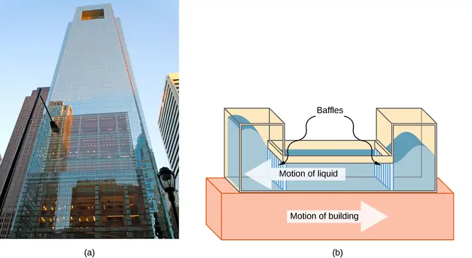
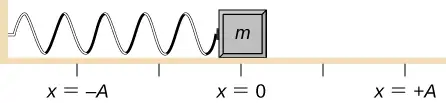
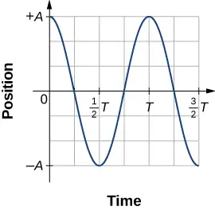
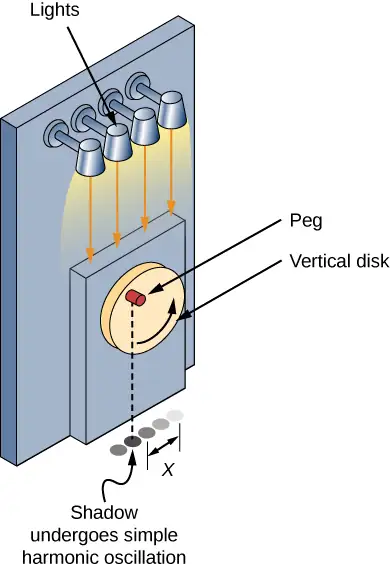
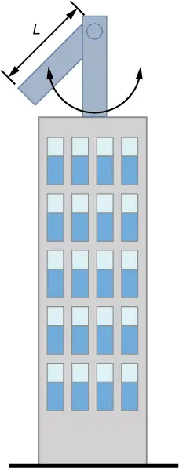
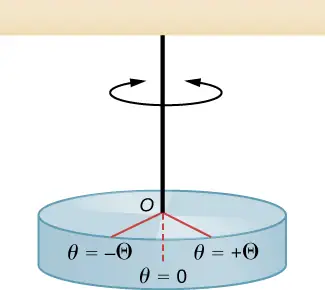
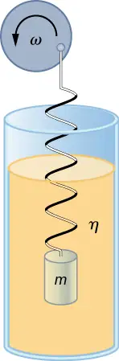
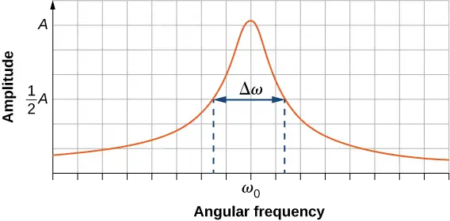
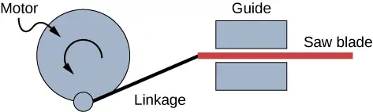

Chapter 15: Oscillations¶
Introduction¶

We begin the study of oscillations with simple systems of pendulums and springs. Although these systems may seem quite basic, the concepts involved have many real-life applications. For example, the Comcast Building in Philadelphia, Pennsylvania, stands approximately 305 meters (1000 feet) tall. As buildings are built taller, they can act as inverted, physical pendulums, with the top floors oscillating due to seismic activity and fluctuating winds. In the Comcast Building, a tuned-mass damper is used to reduce the oscillations. Installed at the top of the building is a tuned, liquid-column mass damper, consisting of a 300,000-gallon reservoir of water. This U-shaped tank allows the water to oscillate freely at a frequency that matches the natural frequency of the building. Damping is provided by tuning the turbulence levels in the moving water using baffles.
15.1 Simple Harmonic Motion¶
Learning Objectives
By the end of this section, you will be able to:
- Define the terms period and frequency
- List the characteristics of simple harmonic motion
- Explain the concept of phase shift
- Write the equations of motion for the system of a mass and spring undergoing simple harmonic motion
- Describe the motion of a mass oscillating on a vertical spring
When you pluck a guitar string, the resulting sound has a steady tone and lasts a long time (Figure 15.2). The string vibrates around an equilibrium position, and one oscillation is completed when the string starts from the initial position, travels to one of the extreme positions, then to the other extreme position, and returns to its initial position. We define periodic motion to be any motion that repeats itself at regular time intervals, such as exhibited by the guitar string or by a child swinging on a swing. In this section, we study the basic characteristics of oscillations and their mathematical description.
Period and Frequency in Oscillations¶
In the absence of friction, the time to complete one oscillation remains constant and is called the period (T). Its units are usually seconds, but may be any convenient unit of time. The word ‘period’ refers to the time for some event whether repetitive or not, but in this chapter, we shall deal primarily in periodic motion, which is by definition repetitive.
A concept closely related to period is the frequency of an event. Frequency (f) is defined to be the number of events per unit time. For periodic motion, frequency is the number of oscillations per unit time. The relationship between frequency and period is
equation callout
The SI unit for frequency is the hertz (Hz) and is defined as one cycle per second:
A cycle is one complete oscillation.
Example 15.1 Determining the Frequency of Medical Ultrasound
Ultrasound machines are used by medical professionals to make images for examining internal organs of the body. An ultrasound machine emits high-frequency sound waves, which reflect off the organs, and a computer receives the waves, using them to create a picture. We can use the formulas presented in this module to determine the frequency, based on what we know about oscillations. Consider a medical imaging device that produces ultrasound by oscillating with a period of \(0.400\:\mu\text{s}\). What is the frequency of this oscillation?
Strategy
The period (T) is given and we are asked to find frequency (f).
Solution
Substitute \(0.400\:\mu\text{s}\) for T in \(f=\frac{1}{T}\):
Solve to find
Significance
This frequency of sound is much higher than the highest frequency that humans can hear (the range of human hearing is 20 Hz to 20,000 Hz); therefore, it is called ultrasound. Appropriate oscillations at this frequency generate ultrasound used for noninvasive medical diagnoses, such as observations of a fetus in the womb.
Characteristics of Simple Harmonic Motion¶
A very common type of periodic motion is called simple harmonic motion (SHM). A system that oscillates with SHM is called a simple harmonic oscillator.
Simple Harmonic Motion
In simple harmonic motion, the acceleration of the system, and therefore the net force, is proportional to the displacement and acts in the opposite direction of the displacement.
A good example of SHM is an object with mass m attached to a spring on a frictionless surface, as shown in Figure 15.3. The object oscillates around the equilibrium position, and the net force on the object is equal to the force provided by the spring. This force obeys Hooke’s law \(F_{s}=-kx,\) as discussed in a previous chapter.
If the net force can be described by Hooke’s law and there is no damping (slowing down due to friction or other nonconservative forces), then a simple harmonic oscillator oscillates with equal displacement on either side of the equilibrium position, as shown for an object on a spring in Figure 15.3. The maximum displacement from equilibrium is called the amplitude (A). The units for amplitude and displacement are the same but depend on the type of oscillation. For the object on the spring, the units of amplitude and displacement are meters.
![The motion and free body diagrams of a mass attached to a horizontal spring, spring constant k, at various points in its motion. In figure (a) the mass is displaced to a position x = A to the right of x =0 and released from rest (v=0.) The spring is stretched. The force on the mass is to the left. The free body diagram has weight w down, the normal force N up and equal to the weight, and the force F to the left. (b) The mass is at x = 0 and moving in the negative x-direction with velocity – v sub max. The spring is relaxed. The Force on the mass is zero. The free body diagram has weight w down, the normal force N up and equal to the weight. (c) The mass is at minus A, to the left of x = 0 and is at rest (v =0.) The spring is compressed. The force F is to the right. The free body diagram has weight w down, the normal force N up and equal to the weight, and the force F to the right. (d) The mass is at x = 0 and moving in the positive x-direction with velocity plus v sub max. The spring is relaxed. The Force on the mass is zero. The free body diagram has weight w down, the normal force N up and equal to the weight. (e) the mass is again at x = A to the right of x =0 and at rest (v=0.) The spring is stretched. The force on the mass is to the left. The free body diagram has weight w down, the normal force N up and equal to the weight, and the force F to the left.](img/cnx-uphysics-15-01-massspring.webp)
What is so significant about SHM? For one thing, the period T and frequency f of a simple harmonic oscillator are independent of amplitude. The string of a guitar, for example, oscillates with the same frequency whether plucked gently or hard.
Two important factors do affect the period of a simple harmonic oscillator. The period is related to how stiff the system is. A very stiff object has a large force constant (k), which causes the system to have a smaller period. For example, you can adjust a diving board’s stiffness—the stiffer it is, the faster it vibrates, and the shorter its period. Period also depends on the mass of the oscillating system. The more massive the system is, the longer the period. For example, a heavy person on a diving board bounces up and down more slowly than a light one. In fact, the mass m and the force constant k are the only factors that affect the period and frequency of SHM. To derive an equation for the period and the frequency, we must first define and analyze the equations of motion. Note that the force constant is sometimes referred to as the spring constant.
Equations of SHM¶
Consider a block attached to a spring on a frictionless table (Figure 15.4). The equilibrium position (the position where the spring is neither stretched nor compressed) is marked as \(x=0\). At the equilibrium position, the net force is zero.

Work is done on the block to pull it out to a position of \(x=+A,\) and it is then released from rest. The maximum x-position (A) is called the amplitude of the motion. The block begins to oscillate in SHM between \(x=+A\) and \(x=-A,\) where A is the amplitude of the motion and T is the period of the oscillation. The period is the time for one oscillation. Figure 15.5 shows the motion of the block as it completes one and a half oscillations after release. Figure 15.6 shows a plot of the position of the block versus time. When the position is plotted versus time, it is clear that the data can be modeled by a cosine function with an amplitude A and a period T. The cosine function \(\cos\theta\) repeats every multiple of \(2\pi,\) whereas the motion of the block repeats every period T. However, the function \(\cos\left( \frac{2\pi}{T}t \right)\) repeats every integer multiple of the period. The maximum of the cosine function is one, so it is necessary to multiply the cosine function by the amplitude A.
equation callout
Recall from the chapter on rotation that the angular frequency equals \(\omega=\frac{d\theta}{dt}\). In this case, the period is constant, so the angular frequency is defined as \(2\pi\) divided by the period, \(\omega=\frac{2\pi}{T}\).
![A series of illustrations of a mass, attached to a horizontal spring and sliding on a horizontal surface, is shown. The position of the mass, the spring, and the force on the mass are illustrated every eighth period from t = 0 to t = one and a half periods. The illustrations are aligned vertically and the positions of the mass are connected from one graph to the next using a blue line, creating a graph of the position (horizontal) dependence on time (vertical). The x = 0 position is at the center of the horizontal surface. In the top graph, the mass is at x = +A, the net force is to the left and is equal to – k A. The spring is stretched the maximum amount. The time is t = 0. In the second graph, the mass is between x = +A/2 and x = A, the net force is to the left and smaller than in the previous graph. The spring is stretched less than at t=0. In the third graph, the mass is at x = 0, there is no net force. The spring is relaxed. The time is t = one quarter T. In the fourth graph, the mass is between x = -A/2 and x = -A, the net force is to the right. The magnitude of the force is the same as that in the second graph. The spring is somewhat compressed. In the fifth graph, the mass is at x = -A, the net force is to the right and is equal to + k A. The spring is compressed the maximum amount. The time is t = 1/2 T. In the sixth graph, the mass is between x = -A/2 and x = -A, the net force is to the right. The magnitude of the force is the same as that in the second graph. The spring is somewhat compressed. This graph is identical to the fourth graph. In the seventh graph, the mass is at x = 0, there is no net force. The spring is relaxed. The time is t = 3/4 T. This graph is identical to the third graph. In the eighth graph, the mass is between x = +A/2 and x = A, the net force is to the left. This graph is identical to the second graph. In the ninth graph, the mass is at x = +A, the net force is to the left and is equal to – k A. The spring is stretched the maximum amount. The time is t = 0. This graph is identical to the first (top) graph. The remaining four graphs repeat the second, third, fourth and fifth graphs, with the eleventh graph’s time at t = 1 and 1/4 T and the thirteenth at t = 1 and 1/2 T. The curve connecting the positions of the mass forms a vertical sinusoidal curve.](img/cnx-uphysics-15-01-masssprosc.webp)

The equation for the position as a function of time \(x(t)=A\,\cos(\omega t)\) is good for modeling data, where the position of the block at the initial time \(t=0.00\:\text{s}\) is at the amplitude A and the initial velocity is zero. Often when taking experimental data, the position of the mass at the initial time \(t=0.00\:\text{s}\) is not equal to the amplitude and the initial velocity is not zero. Consider 10 seconds of data collected by a student in lab, shown in Figure 15.7.
![Data of position versus time for a mass on a spring. The horizontal axis is time t in seconds, ranging from 0 to 10 seconds. The vertical axis is position x in centimeters, ranging from -3 centimeters to 4 centimeters. The data is shown as points and appears to be taken at regular intervals at about 10 points per second. The data oscillates sinusoidally, with a little over four full cycles during the 10 seconds of data shown. The position at t=0 is x = -0.8 centimeters. The position is at a maximum of x = 3 centimeters at about t = 0.6 s, 3.1 s, 5.5 s, and 7.9 s. The position is at the minimum of x = -3 centimeters at about t=1.9 s, 4.3 s, 6.7 s, and 9.0 s.](img/cnx-uphysics-15-01-masssprdat.webp)
The data in Figure 15.7 can still be modeled with a periodic function, like a cosine function, but the function is shifted to the right. This shift is known as a phase shift and is usually represented by the Greek letter phi \((\phi)\). The equation of the position as a function of time for a block on a spring becomes
This is the generalized equation for SHM where t is the time measured in seconds, \(\omega\) is the angular frequency with units of inverse seconds, A is the amplitude measured in meters or centimeters, and \(\phi\) is the phase shift measured in radians (Figure 15.8). It should be noted that because sine and cosine functions differ only by a phase shift, this motion could be modeled using either the cosine or sine function.
![Two graphs of an oscillating function of angle. In figure a, we see the function cosine of theta as a function of theta, from minus pi to two pi. The function oscillates between -1 and +1, and is at the maximum of +1 at theta equals zero. In figure b, we see the function cosine of quantity theta plus phi as a function of theta, from minus pi to two pi. The function oscillates between -1 and +1, and is maximum at theta equals phi. The curve is the cosine curve, shifted to the right by an amount phi.](img/cnx-uphysics-15-01-offsetexam.webp)
The velocity of the mass on a spring, oscillating in SHM, can be found by taking the derivative of the position equation:
Because the sine function oscillates between –1 and +1, the maximum velocity is the amplitude times the angular frequency, \(v_{\max}=A\omega\). The maximum velocity occurs at the equilibrium position \((x=0)\) when the mass is moving toward \(x=+A\). The maximum velocity in the negative direction is attained at the equilibrium position \((x=0)\) when the mass is moving toward \(x=-A\) and is equal to \(-v_{\max}\).
The acceleration of the mass on the spring can be found by taking the time derivative of the velocity:
The maximum acceleration is \(a_{\max}=A\omega^{2}\). The maximum acceleration in the positive direction occurs at the position \((x=-A)\), and is equal to \(a_{\max}\).
Summary of Equations of Motion for SHM¶
In summary, the oscillatory motion of a block on a spring can be modeled with the following equations of motion:
equation callout
Here, A is the amplitude of the motion, T is the period, \(\phi\) is the phase shift, and \(\omega=\frac{2\pi}{T}=2\pi f\) is the angular frequency of the motion of the block.
Example 15.2 Determining the Equations of Motion for a Block and a Spring
A 2.00-kg block is placed on a frictionless surface. A spring with a force constant of \(k=32.00\:\text{N}\text{/}\text{m}\) is attached to the block, and the opposite end of the spring is attached to the wall. The spring can be compressed or extended. The equilibrium position is marked as \(x=0.00\:\text{m}.\)
Work is done on the block, pulling it out to \(x=+0.02\:\text{m}.\) The block is released from rest and oscillates between \(x=+0.02\:\text{m}\) and \(x=-0.02\:\text{m}.\) The period of the motion is 1.57 s. Determine the equations of motion.
Strategy
We first find the angular frequency. The phase shift is zero, \(\phi=0.00\:\text{rad,}\) because the block is released from rest at \(x=A=+0.02\:\text{m}.\) Once the angular frequency is found, we can determine the maximum velocity and maximum acceleration.
Solution
The angular frequency can be found and used to find the maximum velocity and maximum acceleration:
All that is left is to fill in the equations of motion:
Significance
The position, velocity, and acceleration can be found for any time. It is important to remember that when using these equations, your calculator must be in radians mode.
The Period and Frequency of a Mass on a Spring¶
One interesting characteristic of the SHM of an object attached to a spring is that the angular frequency, and therefore the period and frequency of the motion, depend on only the mass and the force constant, and not on other factors such as the amplitude of the motion. We can use the equations of motion and Newton’s second law \(({\mathbf{\vec{F}}}_{\text{net}}=m\mathbf{\vec{a}})\) to find equations for the angular frequency, frequency, and period.
Consider the block on a spring on a frictionless surface. There are three forces on the mass: the weight, the normal force, and the force due to the spring. The only two forces that act perpendicular to the surface are the weight and the normal force, which have equal magnitudes and opposite directions, and thus sum to zero. The only force that acts parallel to the surface is the force due to the spring, so the net force must be equal to the force of the spring:
Substituting the equations of motion for x and a gives us
Cancelling out like terms and solving for the angular frequency yields
equation callout
The angular frequency depends only on the force constant and the mass, and not the amplitude. The angular frequency is defined as \(\omega=2\pi\text{/}T,\) which yields an equation for the period of the motion:
equation callout
The period also depends only on the mass and the force constant. The greater the mass, the longer the period. The stiffer the spring, the shorter the period. The frequency is
equation callout
Vertical Motion and a Horizontal Spring¶
When a spring is hung vertically and a block is attached and set in motion, the block oscillates in SHM. In this case, there is no normal force, and the net effect of the force of gravity is to change the equilibrium position. Consider Figure 15.9. Two forces act on the block: the weight and the force of the spring. The weight is constant and the force of the spring changes as the length of the spring changes.
![An illustration of a vertical spring attached to the ceiling. The positive y direction is upward. In the figure on the left, figure a, the spring has no mass attached to it. The bottom of the spring is a distance y sub zero from the floor. In the middle figure, figure b, the spring has a mass m attached to it. The top of the spring is at the same level as in figure a, but the spring has stretched down a distance delta y, so that the bottom of the spring is now a distance y sub 1 equals y sub zero minus delta y from the floor. On the right, figure c, a free body diagram of the mass is shown with downward force m g and an upward force F sub s that equals k delta y which also equals k times the quantity y sub zero minus y sub 1.](img/cnx-uphysics-15-04-verspequil.webp)
When the block reaches the equilibrium position, as seen in Figure 15.9, the force of the spring equals the weight of the block, \(F_{\text{net}}=F_{\text{s}}-mg=0\), where
From the figure, the change in the position is \(\Delta y=y_{0}-y_{1}\) and since \(-k(-\Delta y)=mg\), we have
If the block is displaced and released, it will oscillate around the new equilibrium position. As shown in Figure 15.10, if the position of the block is recorded as a function of time, the recording is a periodic function.
If the block is displaced to a position y, the net force becomes \(F_{\text{net}}=k(y_{0}-y)-mg=0\). But we found that at the equilibrium position, \(mg=k\Delta y=ky_{0}-ky_{1}\). Substituting for the weight in the equation yields
Recall that \(y_{1}\) is just the equilibrium position and any position can be set to be the point \(y=0.00\text{m}.\) So let’s set \(y_{1}\) to \(y=0.00\:\text{m}.\) The net force then becomes
This is just what we found previously for a horizontally sliding mass on a spring. The constant force of gravity only served to shift the equilibrium location of the mass. Therefore, the solution should be the same form as for a block on a horizontal spring, \(y(t)=A\cos(\omega t+\phi).\) The equations for the velocity and the acceleration also have the same form as for the horizontal case. Note that the inclusion of the phase shift means that the motion can actually be modeled using either a cosine or a sine function, since these two functions only differ by a phase shift.
![A series of 10 illustrations of a ball, attached to a vertical spring, is shown. The illustrations are displayed next to each other, with the tops of the springs aligned. The vertical positions y = + A, y = 0, and y = -A are labeled on the right. Working our way from left to right: In the left-most drawing, the spring is compressed so the ball is at y = + A and at rest. In the second drawing, the ball is at y = 0 and is moving downward. In the third drawing, the spring is stretched so that the ball is at y = - A and at rest. In the fourth drawing, the ball is at y = 0 and is moving upward. In the fifth drawing, the spring is compressed so the ball is at y = + A and at rest. In the sixth drawing, the ball is at y = 0 and is moving downward. In the seventh drawing, the spring is stretched so that the ball is at y = - A and at rest. In the eighth drawing, the ball is at y = 0 and is moving upward. In the ninth drawing, the spring is compressed so the ball is at y = + A and at rest. In the tenth drawing, the ball is at y = 0 and is moving downward. Below these illustrations is a series of graphs, aligned vertically. The top graph is of position as a function of time. The vertical axis is position y, with a range of – A to +A. The horizontal axis is time t, labeled in increments of T. The graph has value y=+A at t=0 and oscillates two and one quarter cycles. The horizontal distance between maxima is labeled as T and the vertical distance between the horizontal axis and the maximum is labeled as amplitude A. The middle graph is of velocity as a function of time. The vertical axis is velocity v, with a range of minus v sub max to v max. The horizontal axis is time t, labeled in increments of T. The graph has value v=0 and a negative slope at t=0, and oscillates two and one quarter cycles. The bottom graph is of acceleration as a function of time. The vertical axis is acceleration a, with a range of minus a sub max to a max. The horizontal axis is time t, labeled in increments of T. The graph has value a equals minus a sub max and a and oscillates two and one quarter cycles. Below the graphs are three illustrations of the ball on the spring. The positions y = + A, y=0, and y = -A are labeled on the right. In the leftmost diagram, a hand holds the ball and the length of the spring is labeled as the unstrained length. This position is above the y = + A position. In the middle picture, the ball is not being held and is at a lower position labeled as the equilibrium position. This position is y = 0. In the rightmost diagram, the ball is shown in four different positions. These positions are y = + A, just above y = 0, just below y = 0 , and at y = -A. The spring is shown only with its bottom attached to the ball at the y = + A position.](img/cnx-uphysics-15-04-hungspring.webp)
15.2 Energy in Simple Harmonic Motion¶
Learning Objectives
By the end of this section, you will be able to:
- Describe the energy conservation of the system of a mass and a spring
- Explain the concepts of stable and unstable equilibrium points
To produce a deformation in an object, we must do work. That is, whether you pluck a guitar string or compress a car’s shock absorber, a force must be exerted through a distance. If the only result is deformation, and no work goes into thermal, sound, or kinetic energy, then all the work is initially stored in the deformed object as some form of potential energy.
Consider the example of a block attached to a spring on a frictionless table, oscillating in SHM. The force of the spring is a conservative force (which you studied in the chapter on potential energy and conservation of energy), and we can define a potential energy for it. This potential energy is the energy stored in the spring when the spring is extended or compressed. In this case, the block oscillates in one dimension with the force of the spring acting parallel to the motion:
When considering the energy stored in a spring, the equilibrium position, marked as \(x_{i}=0.00\:\text{m,}\) is the position at which the energy stored in the spring is equal to zero. When the spring is stretched or compressed a distance x, the potential energy stored in the spring is
Energy and the Simple Harmonic Oscillator¶
To study the energy of a simple harmonic oscillator, we need to consider all the forms of energy. Consider the example of a block attached to a spring, placed on a frictionless surface, oscillating in SHM. The potential energy stored in the deformation of the spring is
In a simple harmonic oscillator, the energy oscillates between kinetic energy of the mass \(K=\frac{1}{2}mv^{2}\) and potential energy \(U=\frac{1}{2}kx^{2}\) stored in the spring. In the SHM of the mass and spring system, there are no dissipative forces, so the total energy is the sum of the potential energy and kinetic energy. In this section, we consider the conservation of energy of the system. The concepts examined are valid for all simple harmonic oscillators, including those where the gravitational force plays a role.
Consider Figure 15.11, which shows an oscillating block attached to a spring. In the case of undamped SHM, the energy oscillates back and forth between kinetic and potential, going completely from one form of energy to the other as the system oscillates. So for the simple example of an object on a frictionless surface attached to a spring, the motion starts with all of the energy stored in the spring as elastic potential energy. As the object starts to move, the elastic potential energy is converted into kinetic energy, becoming entirely kinetic energy at the equilibrium position. The energy is then converted back into elastic potential energy by the spring as it is stretched or compressed. The velocity becomes zero when the kinetic energy is completely converted, and this cycle then repeats. Understanding the conservation of energy in these cycles will provide extra insight here and in later applications of SHM, such as alternating circuits.
![The motion and energy of a mass attached to a horizontal spring, spring constant k, at various points in its motion. In figure (a) the mass is displaced to a position x = A to the right of x =0 and released from rest (v=0.) The spring is stretched. The force on the mass is to the left. The diagram is labeled with one half k A squared. (b) The mass is at x = 0 and moving in the negative x-direction with velocity – v sub max. The spring is relaxed. The Force on the mass is zero. The diagram is labeled with one half m quantity v sub max squared. (c) The mass is at minus A, to the left of x = 0 and is at rest (v =0.) The spring is compressed. The force F is to the right. The diagram is labeled with one half k quantity minus A squared. (d) The mass is at x = 0 and moving in the positive x-direction with velocity plus v sub max. The spring is relaxed. The Force on the mass is zero. The diagram is labeled with one half m v sub max squared. (e) the mass is again at x = A to the right of x =0. The diagram is labeled with one half k A squared.](img/cnx-uphysics-15-02-energystsp.webp)
Consider Figure 15.11, which shows the energy at specific points on the periodic motion. While staying constant, the energy oscillates between the kinetic energy of the block and the potential energy stored in the spring:
The motion of the block on a spring in SHM is defined by the position \(x(t)=A\cos(\omega t+\phi)\) with a velocity of \(v(t)=-A\omega\sin(\omega t+\phi)\). Using these equations, the trigonometric identity \(\cos^{2}\theta+\sin^{2}\theta=1\) and \(\omega=\sqrt{\frac{k}{m}}\), we can find the total energy of the system:
The total energy of the system of a block and a spring is equal to the sum of the potential energy stored in the spring plus the kinetic energy of the block and is proportional to the square of the amplitude \(E_{\text{Total}}=(1\text{/}2)kA^{2}.\) The total energy of the system is constant.
A closer look at the energy of the system shows that the kinetic energy oscillates like a sine-squared function, while the potential energy oscillates like a cosine-squared function. However, the total energy for the system is constant and is proportional to the amplitude squared. Figure 15.12 shows a plot of the potential, kinetic, and total energies of the block and spring system as a function of time. Also plotted are the position and velocity as a function of time. Before time \(t=0.0\:\text{s,}\) the block is attached to the spring and placed at the equilibrium position. Work is done on the block by applying an external force, pulling it out to a position of \(x=+A\). The system now has potential energy stored in the spring. At time \(t=0.00\:\text{s,}\) the position of the block is equal to the amplitude, the potential energy stored in the spring is equal to \(U=\frac{1}{2}kA^{2}\), and the force on the block is maximum and points in the negative x-direction \((F_{S}=-kA)\). The velocity and kinetic energy of the block are zero at time \(t=0.00\:\text{s}.\) At time \(t=0.00\:\text{s,}\) the block is released from rest.
![Graphs of the energy, position, and velocity as functions of time for a mass on a spring. On the left is the graph of energy in Joules (J) versus time in seconds. The vertical axis range is zero to one half k A squared. The horizontal axis range is zero to T. Three curves are shown. The total energy E sub total is shown as a green line. The total energy is a constant at a value of one half k A squared. The kinetic energy K equals one half m v squared is shown as a red curve. K starts at zero energy at t=0, and rises to a maximum value of one half k A squared at time 1/4 T, then decreases to zero at 1/2 T, rises to one half k A squared at 3/4 T, and is zero again at T. Potential energy U equals one half k x squared is shown as a blue curve. U starts at maximum energy of one half k A squared at t=0, decreases to zero at 1/4 T, rises to one half k A squared at 1/2 T, is zero again at 3/4 T and is at the maximum of one half k A squared again at t=T. On the right is a graph of position versus time above a graph of velocity versus time. The position graph has x in meters, ranging from –A to +A, versus time in seconds. The position is at +A and decreasing at t=0, reaches a minimum of –A, then rises to +A. The velocity graph has v in m/s, ranging from minus v sub max to plus v sub max, versus time in seconds. The velocity is zero and decreasing at t=0, and reaches a minimum of minus v sub max at the same time that the position graph is zero. The velocity is zero again when the position is at x=-A, rises to plus v sub max when the position is zero, and v=0 at the end of the graph, where the position Is again maximum.](img/cnx-uphysics-15-02-enertotspr.webp)
Oscillations About an Equilibrium Position¶
We have just considered the energy of SHM as a function of time. Another interesting view of the simple harmonic oscillator is to consider the energy as a function of position. Figure 15.13 shows a graph of the energy versus position of a system undergoing SHM.
![Graph of energy E in Joules on the vertical axis versus position x in meters on the horizontal axis. The horizontal axis had x=0 labeled as the equilibrium position with F=0. Positions x=-A and x=+A are labeled as turning points. A concave down parabola in red, labeled as K, has its maximum value of E=E total at x=0 and is zero at x=-A and x=+A. A horizontal green line at a constant E value of E total is labeled as E total. A concave up parabola in blue, labeled as U, intersects the green line with a value of E=E total at x=-A and x=+A and is zero at x=0. The region of the graph to the left of x=0 is labeled with a red arrow pointing to the right and the equation F equals minus the derivative of U with respect to x. The region of the graph to the right of x=0 is labeled with a red arrow pointing to the left and the equation F equals minus the derivative of U with respect to x.](img/cnx-uphysics-15-02-shmenrgpos.webp)
The potential energy curve in Figure 15.13 resembles a bowl. When a marble is placed in a bowl, it settles to the equilibrium position at the lowest point of the bowl \((x=0)\). This happens because a restoring force points toward the equilibrium point. This equilibrium point is sometimes referred to as a fixed point. When the marble is disturbed to a different position \((x=+A)\), the marble oscillates around the equilibrium position. Looking back at the graph of potential energy, the force can be found by looking at the slope of the potential energy graph \(\left( F=-\frac{dU}{dx} \right)\). Since the force on either side of the fixed point points back toward the equilibrium point, the equilibrium point is called a stable equilibrium point. The points \(x=A\) and \(x=-A\) are called the turning points. (See Potential Energy and Conservation of Energy.)
Stability is an important concept. If an equilibrium point is stable, a slight disturbance of an object that is initially at the stable equilibrium point will cause the object to oscillate around that point. The stable equilibrium point occurs because the force on either side is directed toward it. For an unstable equilibrium point, if the object is disturbed slightly, it does not return to the equilibrium point.
Consider the marble in the bowl example. If the bowl is right-side up, the marble, if disturbed slightly, will oscillate around the stable equilibrium point. If the bowl is turned upside down, the marble can be balanced on the top, at the equilibrium point where the net force is zero. However, if the marble is disturbed slightly, it will not return to the equilibrium point, but will instead roll off the bowl. The reason is that the force on either side of the equilibrium point is directed away from that point. This point is an unstable equilibrium point.
Figure 15.14 shows three conditions. The first is a stable equilibrium point (a), the second is an unstable equilibrium point (b), and the last is also an unstable equilibrium point (c), because the force on only one side points toward the equilibrium point.
![Three illustrations of a ball on a surface. In figure a, stable equilibrium point, the ball is inside a concave-up surface, at the bottom. A filled circle under the surface, below the ball, has two horizontal arrows labeled as F pointing toward it from either side. Gray arrows tangent to the surface are shown inside the surface, pointing down the slope, toward the ball’s position. In figure b, unstable equilibrium point, the ball is on top of a concave-down surface, at the top. An empty circle under the surface, below the ball, has two horizontal arrows labeled as F pointing away it from either side. Gray arrows tangent to the surface are shown inside the surface, pointing down the slope, away from the ball’s position. In figure c, unstable equilibrium point, the ball is on the inflection point of a surface. A half-filled circle under the surface, below the ball, has two horizontal arrows labeled as F, one on either side of the circle, both pointing to the left. Gray arrows tangent to the surface are shown inside the surface, pointing down the slope, one toward the ball and the other away from it.](img/cnx-uphysics-15-02-bowlfixpt.webp)
The process of determining whether an equilibrium point is stable or unstable can be formalized. Consider the potential energy curves shown in Figure 15.15. The force can be found by analyzing the slope of the graph. The force is \(F=-\frac{dU}{dx}.\) In (a), the fixed point is at \(x=0.00\:\text{m}.\) When \(x \lt 0.00\:\text{m,}\) the force is positive. When \(x \gt 0.00\:\text{m,}\) the force is negative. This is a stable point. In (b), the fixed point is at \(x=0.00\:\text{m}.\) When \(x \lt 0.00\:\text{m,}\) the force is negative. When \(x \gt 0.00\:\text{m,}\) the force is also negative. This is an unstable point.
![Two graphs of U in Joules on the vertical axis as a function of x in meters on the horizontal axis. In figure a, U of x is an upward opening parabola whose vertex is marked with a black dot and is at x=0, U=0. The region of the graph to the left of x=0 is labeled with a red arrow pointing to the right and the equation F equals minus the derivative of U with respect to x is greater than zero. The region of the graph to the right of x=0 is labeled with a red arrow pointing to the left and the equation F equals minus the derivative of U with respect to x is less than zero. Below the graph is a copy of the dot between copies of the red arrows and the force relations, F equals minus the derivative of U with respect to x is greater than zero on the left and F equals minus the derivative of U with respect to x is less than zero on the right. In figure b, U of x is an increasing function with an inflection point that is marked with a half filled circle at x=0, U=0. The region of the graph to the left of x=0 is labeled with a red arrow pointing to the left and the equation F equals minus the derivative of U with respect to x is less than zero. The region of the graph to the right of x=0 is also labeled with a red arrow pointing to the left and the equation F equals minus the derivative of U with respect to x is less than zero. Below the graph is a copy of the circle between copies of the red arrows, both of which point to the left, and the force relations, F equals minus the derivative of U with respect to x is less than zero on the left and F equals minus the derivative of U with respect to x is less than zero on the right.](img/cnx-uphysics-15-02-bowlfixed.webp)
A practical application of the concept of stable equilibrium points is the force between two neutral atoms in a molecule. If two molecules are in close proximity, separated by a few atomic diameters, they can experience an attractive force. If the molecules move close enough so that the electron shells of the other electrons overlap, the force between the molecules becomes repulsive. The attractive force between the two atoms may cause the atoms to form a molecule. The force between the two molecules is not a linear force and cannot be modeled simply as two masses separated by a spring, but the atoms of the molecule can oscillate around an equilibrium point when displaced a small amount from the equilibrium position. The atoms oscillate due the attractive force and repulsive force between the two atoms.
Consider one example of the interaction between two atoms known as the van Der Waals interaction. It is beyond the scope of this chapter to discuss in depth the interactions of the two atoms, but the oscillations of the atoms can be examined by considering one example of a model of the potential energy of the system. One suggestion to model the potential energy of this molecule is with the Lennard-Jones 6-12 potential:
A graph of this function is shown in Figure 15.16. The two parameters \(\varepsilon\) and \(\sigma\) are found experimentally.
![An annotated graph of E in Joules on the vertical axis as a function of x in meters on the horizontal axis. The Lennard-Jones potential, U, is shown as a blue curve that is large and positive at small x. It decreases rapidly, becomes negative, and continues to decrease until it reaches a minimum value at a position marked as the equilibrium position, F=0, then gradually increases and approaches E=0 asymptotically but remains negative. A horizontal green line of constant, negative value is labeled as E total. The green and blue E total and U curves cross at two places. The x value of the crossing to the left of the equilibrium position is labeled turning point, minus A, and the crossing to the right of the equilibrium position is labeled turning point, plus A. The region of the graph to the left of the equilibrium position is labeled with a red arrow pointing to the right and the equation F equals minus the derivative of U with respect to. The region of the graph to the right of the equilibrium position is labeled with a red arrow pointing to the left and the equation F equals minus the derivative of U with respect to x.](img/cnx-uphysics-15-02-lennajones.webp)
From the graph, you can see that there is a potential energy well, which has some similarities to the potential energy well of the potential energy function of the simple harmonic oscillator discussed in Figure 15.13. The Lennard-Jones potential has a stable equilibrium point where the potential energy is minimum and the force on either side of the equilibrium point points toward equilibrium point. Note that unlike the simple harmonic oscillator, the potential well of the Lennard-Jones potential is not symmetric. This is due to the fact that the force between the atoms is not a Hooke’s law force and is not linear. The atoms can still oscillate around the equilibrium position \(x_{\min}\) because when \(x \lt x_{\min}\), the force is positive; when \(x \gt x_{\min}\), the force is negative. Notice that as x approaches zero, the slope is quite steep and negative, which means that the force is large and positive. This suggests that it takes a large force to try to push the atoms close together. As x becomes increasingly large, the slope becomes less steep and the force is smaller and negative. This suggests that if given a large enough energy, the atoms can be separated.
If you are interested in this interaction, find the force between the molecules by taking the derivative of the potential energy function. You will see immediately that the force does not resemble a Hooke’s law force \((F=-kx)\), but if you are familiar with the binomial theorem:
the force can be approximated by a Hooke’s law force.
Velocity and Energy Conservation¶
Getting back to the system of a block and a spring in Figure 15.11, once the block is released from rest, it begins to move in the negative direction toward the equilibrium position. The potential energy decreases and the magnitude of the velocity and the kinetic energy increase. At time \(t=T\text{/}4\), the block reaches the equilibrium position \(x=0.00\:\text{m,}\) where the force on the block and the potential energy are zero. At the equilibrium position, the block reaches a negative velocity with a magnitude equal to the maximum velocity \(v=-A\omega\). The kinetic energy is maximum and equal to \(K=\frac{1}{2}mv^{2}=\frac{1}{2}mA^{2}\omega^{2}=\frac{1}{2}kA^{2}.\) At this point, the force on the block is zero, but momentum carries the block, and it continues in the negative direction toward \(x=-A\). As the block continues to move, the force on it acts in the positive direction and the magnitude of the velocity and kinetic energy decrease. The potential energy increases as the spring compresses. At time \(t=T\text{/}2\), the block reaches \(x=-A\). Here the velocity and kinetic energy are equal to zero. The force on the block is \(F=+kA\) and the potential energy stored in the spring is \(U=\frac{1}{2}kA^{2}\). During the oscillations, the total energy is constant and equal to the sum of the potential energy and the kinetic energy of the system,
equation callout
The equation for the energy associated with SHM can be solved to find the magnitude of the velocity at any position:
equation callout
The energy in a simple harmonic oscillator is proportional to the square of the amplitude. When considering many forms of oscillations, you will find the energy proportional to the amplitude squared.
Check Your Understanding
Why would it hurt more if you snapped your hand with a ruler than with a loose spring, even if the displacement of each system is equal?
Answer
The ruler is a stiffer system, which carries greater force for the same amount of displacement. The ruler snaps your hand with greater force, which hurts more.
Check Your Understanding
Identify one way you could decrease the maximum velocity of a simple harmonic oscillator.
Answer
You could increase the mass of the object that is oscillating. Other options would be to reduce the amplitude, or use a less stiff spring.
15.3 Comparing Simple Harmonic Motion and Circular Motion¶
Learning Objectives
By the end of this section, you will be able to:
- Describe how the sine and cosine functions relate to the concepts of circular motion
- Describe the connection between simple harmonic motion and circular motion
An easy way to model SHM is by considering uniform circular motion. Figure 15.17 shows one way of using this method. A peg (a cylinder of wood) is attached to a vertical disk, rotating with a constant angular frequency. Figure 15.18 shows a side view of the disk and peg. If a lamp is placed above the disk and peg, the peg produces a shadow. Let the disk have a radius of \(r=A\) and define the position of the shadow that coincides with the center line of the disk to be \(x=0.00\:m\). As the disk rotates at a constant rate, the shadow oscillates between \(x=+A\) and \(x=-A\). Now imagine a block on a spring beneath the floor as shown in Figure 15.18.

![A comparison of the angular location of a peg on a rotating disk, the position of its shadow, and the position of a mass oscillating on a horizontal spring. In each figure, the peg is illuminated from above by a set of lights, casting a shadow on a horizontal line. The disk has radius r = A and rotates counterclockwise with angular velocity omega. The angular position of the peg, theta, is zero when the peg is directly to the right of the center of the disk. The spring is attached to a wall on the left and a mass on the right. The position of the mass and the shadow is x, where x=0 is directly below the center of the disk , x=-A is directly below the left edge of the disk, and x=+A is directly below the right edge of the disk. In figure a, t=0.0. The peg is directly to the right of the center of the disk. Its shadow and the mass are both at x = +A. In figure b, the peg is at angle theta equals omega t, in the first quadrant. Its shadow and the mass are both directly below the peg at what appears to be x = +A/2. The time is not specified. In figure c, t=T/4. The peg is directly above the center of the disk. Its angular position theta equals omega t. Its shadow and the mass are both at x =0. In figure d, the peg is at angle theta equals omega t, now in the second quadrant. Its shadow and the mass are both directly below the peg at what appears to be x = -A/2. The time is not specified.](img/cnx-uphysics-15-03-circularmt.webp)
If the disk turns at the proper angular frequency, the shadow follows along with the block. The position of the shadow can be modeled with the equation
equation callout
Recall that the block attached to the spring does not move at a constant velocity. How often does the wheel have to turn to have the peg’s shadow always on the block? The disk must turn at a constant angular frequency equal to \(2\pi\) times the frequency of oscillation \((\omega=2\pi f)\).
Figure 15.19 shows the basic relationship between uniform circular motion and SHM. The peg lies at the tip of the radius, a distance A from the center of the disk. The x-axis is defined by a line drawn parallel to the ground, cutting the disk in half. The y-axis (not shown) is defined by a line perpendicular to the ground, cutting the disk into a left half and a right half. The center of the disk is the point \((x=0,y=0).\) The projection of the position of the peg onto the fixed x-axis gives the position of the shadow, which undergoes SHM analogous to the system of the block and spring. At the time shown in the figure, the projection has position x and moves to the left with velocity v. The tangential velocity of the peg around the circle equals \({\bar{v}}_{\max}\) of the block on the spring. The x-component of the velocity is equal to the velocity of the block on the spring.
![A comparison of the angular location of a peg on a rotating disk, the position of its shadow, and the position of a mass oscillating on a horizontal spring. The disk has radius r = A and rotates counterclockwise with angular velocity omega. The angular position of the peg, theta, is zero when the peg is directly to the right of the center of the disk and is equal to omega t at the time shown. The linear velocity of the peg is shown as a vector tangent to the circle at the edge of the disk. It has magnitude v sub max which is equal to A omega. Its x component is a horizontal leftward vector – v sub max times sine omega t. The peg casts a shadow on a horizontal line. The spring is attached to a wall on the left and a mass on the right. The position of the mass and the shadow is x, where x=0 is directly below the center of the disk, x=-A is directly below the left edge of the disk, and x=+A is directly below the right edge of the disk. In the figure, the peg is in the first quadrant. Its shadow and the mass are both at a position x between 0 and plus A (it appears to be at x = A/2 in the figure.)](img/cnx-uphysics-15-03-circularpt.webp)
We can use Figure 15.19 to analyze the velocity of the shadow as the disk rotates. The peg moves in a circle with a speed of \(v_{\max}=A\omega\). The shadow moves with a velocity equal to the component of the peg’s velocity that is parallel to the surface where the shadow is being produced:
equation callout
It follows that the acceleration is
equation callout
Check Your Understanding
Identify an object that undergoes uniform circular motion. Describe how you could trace the SHM of this object.
Answer
A ketchup bottle sits on a lazy Susan in the center of the dinner table. You set it rotating in uniform circular motion. A set of lights shine on the bottle, producing a shadow on the wall.
15.4 Pendulums¶
Learning Objectives
By the end of this section, you will be able to:
- State the forces that act on a simple pendulum
- Determine the angular frequency, frequency, and period of a simple pendulum in terms of the length of the pendulum and the acceleration due to gravity
- Define the period for a physical pendulum
- Define the period for a torsional pendulum
Pendulums are in common usage. Grandfather clocks use a pendulum to keep time and a pendulum can be used to measure the acceleration due to gravity. For small displacements, a pendulum is a simple harmonic oscillator.
The Simple Pendulum¶
A simple pendulum is defined to have a point mass, also known as the pendulum bob, which is suspended from a string of length L with negligible mass (Figure 15.20). Here, the only forces acting on the bob are the force of gravity (i.e., the weight of the bob) and tension from the string. The mass of the string is assumed to be negligible as compared to the mass of the bob.
![In the figure, a horizontal bar is shown. A string of length L extends from the bar at an angle theta counterclockwise from the vertical. The vertical direction is indicated by a dashed line extending down from where the string is attached to the bar. A circular bob of mass m is attached to the lower end of the string. The arc from the mass to the vertical is indicated by another dashed line and is a length s. A red arrow showing the time T of the oscillation of the mob is shown along the string line toward the bar. A coordinate system is shown near the bob with the positive y direction aligned with the string and pointing toward the pivot point and the positive x direction pointing tangent to the arc and away from the equilibrium position. An blue arrow from the bob toward the pivot, along the string, is labeled F sub T. A red arrow from the bob pointing down is labeled w = m g. A red arrow pointing tangent to the arc and toward equilibrium, in the minus x direction, is labeled minus m g sine theta. A red arrow at an angle theta counterclockwise from w is labeled minus m g cosine theta.](img/cnx-uphysics-15-05-simplepend.webp)
Consider the torque on the pendulum. The force providing the restoring torque is the component of the weight of the pendulum bob that acts along the arc length. The torque is the length of the string L times the component of the net force that is perpendicular to the radius of the arc. The minus sign indicates the torque acts in the opposite direction of the angular displacement:
The solution to this differential equation involves advanced calculus, and is beyond the scope of this text. But note that for small angles (less than 15 degrees or about 0.26 radians), \(\sin\:\theta\) and \(\theta\) differ by less than 1%, if θ is measured in radians. We can then use the small angle approximation \(\sin\:\theta\approx\theta.\) The angle \(\theta\) describes the position of the pendulum. Using the small angle approximation gives an approximate solution for small angles,
equation callout
Because this equation has the same form as the equation for SHM, the solution is easy to find. The angular frequency is
equation callout
and the period is
equation callout
The period of a simple pendulum depends on its length and the acceleration due to gravity. The period is completely independent of other factors, such as mass and the maximum displacement. As with simple harmonic oscillators, the period T for a pendulum is nearly independent of amplitude, especially if \(\theta\) is less than about \(15{}^{\circ}.\) Even simple pendulum clocks can be finely adjusted and remain accurate.
Note the dependence of T on g. If the length of a pendulum is precisely known, it can actually be used to measure the acceleration due to gravity, as in the following example.
Example 15.3 Measuring Acceleration due to Gravity by the Period of a Pendulum
What is the acceleration due to gravity in a region where a simple pendulum having a length 75.000 cm has a period of 1.7357 s?
Strategy
We are asked to find g given the period T and the length L of a pendulum. We can solve \(T=2\pi\sqrt{\frac{L}{g}}\) for g, assuming only that the angle of deflection is less than \(15{}^{\circ}\).
Solution
-
Square \(T=2\pi\sqrt{\frac{L}{g}}\) and solve for g:
\[ g=4\pi^{2}\frac{L}{T^{2}}. \] -
Substitute known values into the new equation:
\[ g=4\pi^{2}\frac{0.75000\:\text{m}}{{(1.7357\:\text{s})}^{2}}. \] -
Calculate to find g:
\[ g=9.8281{\:\text{m/s}}^{2}. \]
Significance
This method for determining g can be very accurate, which is why length and period are given to five digits in this example. For the precision of the approximation \(\sin\:\theta\approx\theta\) to be better than the precision of the pendulum length and period, the maximum displacement angle should be kept below about \(0.5{}^{\circ}\).
Check Your Understanding
An engineer builds two simple pendulums. Both are suspended from small wires secured to the ceiling of a room. Each pendulum hovers 2 cm above the floor. Pendulum 1 has a bob with a mass of 10 kg. Pendulum 2 has a bob with a mass of 100 kg. Describe how the motion of the pendulums will differ if the bobs are both displaced by \(12{}^{\circ}\).
Answer
The movement of the pendulums will not differ at all because the mass of the bob has no effect on the motion of a simple pendulum. The pendulums are only affected by the period (which is related to the pendulum’s length) and by the acceleration due to gravity.
Physical Pendulum¶
Any object can oscillate like a pendulum. Consider a coffee mug hanging on a hook in the pantry. If the mug gets knocked, it oscillates back and forth like a pendulum until the oscillations die out. We have described a simple pendulum as a point mass and a string. A physical pendulum is any object whose oscillations are similar to those of the simple pendulum, but cannot be modeled as a point mass on a string, and the mass distribution must be included into the equation of motion.
As for the simple pendulum, the restoring force of the physical pendulum is the force of gravity. With the simple pendulum, the force of gravity acts on the center of the pendulum bob. In the case of the physical pendulum, the force of gravity acts on the center of mass (CM) of an object. The object oscillates about a point O. Consider an object of a generic shape as shown in Figure 15.21.
![A drawing of a physical pendulum. In the figure, the pendulum is an irregularly shaped object. The center of mass, C M, is a distance L from the pivot point, O. The center of mass traces a circular arc, centered at O. The line from O to L makes an angle theta counterclockwise from the vertical. Three forces are depicted by red arrows at the center of mass. The force m g points down. Its components are minus m g sine theta which points tangent to the arc traced by the center of mass, and m g cosine theta which points radially outward.](img/cnx-uphysics-15-05-physicalpd.webp)
When a physical pendulum is hanging from a point but is free to rotate, it rotates because of the torque applied at the CM, produced by the component of the object’s weight that acts tangent to the motion of the CM. Taking the counterclockwise direction to be positive, the component of the gravitational force that acts tangent to the motion is \(-mg\:\sin\:\theta\). The minus sign is the result of the restoring force acting in the opposite direction of the increasing angle. Recall that the torque is equal to \(\vec{\tau}=\mathbf{\vec{r}}\:\times\:\mathbf{\vec{F}}\). The magnitude of the torque is equal to the length of the radius arm times the tangential component of the force applied, \(|\tau|=rF\sin\:\theta\). Here, the length L of the radius arm is the distance between the point of rotation and the CM. To analyze the motion, start with the net torque. Like the simple pendulum, consider only small angles so that \(\sin\:\theta\approx\theta\). Recall from Fixed-Axis Rotation on rotation that the net torque is equal to the moment of inertia \(I=\displaystyle \int r^{2}dm\) times the angular acceleration \(\alpha,\) where \(\alpha=\frac{d^{2}\theta}{dt^{2}}\):
Using the small angle approximation and rearranging:
Once again, the equation says that the second time derivative of the position (in this case, the angle) equals minus a constant \(\left( -\frac{mgL}{I} \right)\) times the position. The solution is
where \(\Theta\) is the maximum angular displacement. The angular frequency is
equation callout
The period is therefore
equation callout
Note that for a simple pendulum, the moment of inertia is \(I=\displaystyle \int r^{2}dm=mL^{2}\) and the period reduces to \(T=2\pi\sqrt{\frac{L}{g}}\).
Example 15.4 Reducing the Swaying of a Skyscraper
In extreme conditions, skyscrapers can sway up to two meters with a frequency of up to 20.00 Hz due to high winds or seismic activity. Several companies have developed physical pendulums that are placed on the top of the skyscrapers. As the skyscraper sways to the right, the pendulum swings to the left, reducing the sway. Assuming the oscillations have a frequency of 0.50 Hz, design a pendulum that consists of a long beam, of constant density, with a mass of 100 metric tons and a pivot point at one end of the beam. What should be the length of the beam?

Strategy
We are asked to find the length of the physical pendulum with a known mass. We first need to find the moment of inertia of the beam. We can then use the equation for the period of a physical pendulum to find the length.
Solution
-
Find the moment of inertia for the CM:
Use the parallel axis theorem to find the moment of inertia about the point of rotation for a rod length L:\[ I=I_{\text{CM}}+{\frac{L}{4}}^{2}M=\frac{1}{12}ML^{2}+\frac{1}{4}ML^{2}=\frac{1}{3}ML^{2}. \] -
The period of a physical pendulum with its center of mass a distance l from the pivot point has a period of \(T=2\pi\sqrt{\frac{I}{mgl}}\). In this problem, L has been defined as the total length of the rod, so \(l=L/2\). Use the moment of inertia to solve for the length L:
\[ \begin{array}{c} T=\sqrt{\frac{\displaystyle \frac{1}{3}{ML}^{2}}{Mg\displaystyle \frac{L}{2}}}=2\pi\sqrt{\frac{2L}{3g}}; \\ L=\frac{3T^{2}g}{8\pi^{2}}=1.49\:\mathrm{m}. \end{array} \]
Significance
There are many ways to reduce the oscillations, including modifying the shape of the skyscrapers, using multiple physical pendulums, and using tuned-mass dampers.
Torsional Pendulum¶
A torsional pendulum consists of a rigid body suspended by a light wire or spring (Figure 15.22). When the body is twisted some small maximum angle \((\Theta)\) and released from rest, the body oscillates between \((\theta=+\Theta)\) and \((\theta=-\:\Theta)\). The restoring torque is supplied by the shearing of the string or wire.

The restoring torque can be modeled as being proportional to the angle:
The variable kappa \((\kappa)\) is known as the torsion constant of the wire or string. The minus sign shows that the restoring torque acts in the opposite direction to increasing angular displacement. The net torque is equal to the moment of inertia times the angular acceleration:
This equation says that the second time derivative of the position (in this case, the angle) equals a negative constant times the position. This looks very similar to the equation of motion for the SHM \(\frac{d^{2}x}{dt^{2}}=-\frac{k}{m}x\), where the period was found to be \(T=2\pi\sqrt{\frac{m}{k}}\). Therefore, the period of the torsional pendulum can be found using
equation callout
The units for the torsion constant are \([\kappa]=\text{N-m}=\left( \text{kg}\frac{\text{m}}{\text{s}^{2}} \right)\text{m}=\text{kg}\:\frac{\text{m}^{2}}{\text{s}^{2}}\) and the units for the moment of inertial are \([I]=\text{kg-m}^{2},\) which show that the unit for the period is the second.
Example 15.5 Measuring the Torsion Constant of a String
A rod has a length of \(L=0.30\:\text{m}\) and a mass of 4.00 kg. A string is attached to the CM of the rod and the system is hung from the ceiling (Figure 15.23). The rod is displaced 10 degrees from the equilibrium position and released from rest. The rod oscillates with a period of 0.5 s. What is the torsion constant \(\kappa\)?
![Figure a shows a horizontal rod, length 30.0 centimeters and mass 4.00 kilograms, hanging by a string from the ceiling. The string attaches to the middle of the rod. The rod rotates with the string in the horizontal plane. Figure b shows the rod with the details needed for finding its moment of inertia. The rod’s length, end to end, is L and its total mass is M. It has linear mass density lambda equals d m d x which also equals M over L. A small segment of the rod that has length d x at a distance x from the center of the rod is highlighted. The string is attached to the rod at the center of the rod.](img/cnx-uphysics-15-05-torspenrod.webp)
Strategy
We are asked to find the torsion constant of the string. We first need to find the moment of inertia.
Solution
-
Find the moment of inertia for the CM:
\[ I_{\text{CM}}=\displaystyle \int x^{2}dm=\displaystyle \int_{-L\text{/}2}^{+L\text{/}2}x^{2}\lambda dx=\lambda{\left[ \frac{x^{3}}{3} \right]}_{-L\text{/}2}^{+L\text{/}2}=\lambda\frac{2L^{3}}{24}=\left( \frac{M}{L} \right)\frac{2L^{3}}{24}=\frac{1}{12}ML^{2}. \] -
Calculate the torsion constant using the equation for the period:
\[ \begin{array}{ccc} T & = & 2\pi\sqrt{\frac{I}{\kappa}}; \\ \kappa & = & I{\left( \frac{2\pi}{T} \right)}^{2}=\left( \frac{1}{12}ML^{2} \right){\left( \frac{2\pi}{T} \right)}^{2}; \\ & = & \left( \frac{1}{12}(4.00\:\text{kg}){(0.30\:\text{m})}^{2} \right){\left( \frac{2\pi}{0.50\:\text{s}} \right)}^{2}=4.73\:\text{N}\cdot\text{m}. \end{array} \]
Significance
Like the force constant of the system of a block and a spring, the larger the torsion constant, the shorter the period.
15.5 Damped Oscillations¶
Learning Objectives
By the end of this section, you will be able to:
- Describe the motion of damped harmonic motion
- Write the equations of motion for damped harmonic oscillations
- Describe the motion of driven, or forced, damped harmonic motion
- Write the equations of motion for forced, damped harmonic motion
In the real world, oscillations seldom follow true SHM. Friction of some sort usually acts to dampen the motion so it dies away, or needs more force to continue. In this section, we examine some examples of damped harmonic motion and see how to modify the equations of motion to describe this more general case.
A guitar string stops oscillating a few seconds after being plucked. To keep swinging on a playground swing, you must keep pushing (Figure 15.24). Although we can often make friction and other nonconservative forces small or negligible, completely undamped motion is rare. In fact, we may even want to damp oscillations, such as with car shock absorbers.
Figure 15.25 shows a mass m attached to a spring with a force constant \(k.\) The mass is raised to a position \(A_{0}\), the initial amplitude, and then released. The mass oscillates around the equilibrium position in a fluid with viscosity but the amplitude decreases for each oscillation. For a system that has a small amount of damping, the period and frequency are constant and are nearly the same as for SHM, but the amplitude gradually decreases as shown. This occurs because the non-conservative damping force removes energy from the system, usually in the form of thermal energy.
![A mass m is suspended from a vertical spring and immersed in a fluid that has viscosity eta. A graph of the damped oscillation shows the displacement x in meters on the vertical axis as a function of time in seconds on the horizontal axis. The range of x is from minus A sub zero to plus A sub zero. The time scale is from zero to 7 T, with tics at increments of T. The displacement is plus A sub zero at time zero and oscillates between positive maxima and negative minima, with each full cycle taking the same time T but the amplitude of the oscillations decreasing with time.](img/cnx-uphysics-15-06-dampedosci.webp)
Consider the forces acting on the mass. Note that the only contribution of the weight is to change the equilibrium position, as discussed earlier in the chapter. Therefore, the net force is equal to the force of the spring and the damping force \((F_{D})\). If the magnitude of the velocity is small, meaning the mass oscillates slowly, the damping force is proportional to the velocity and acts against the direction of motion \((F_{D}=-bv)\). The net force on the mass is therefore
Writing this as a differential equation in x, we obtain
equation callout
To determine the solution to this equation, consider the plot of position versus time shown in Figure 15.26. The curve resembles a cosine curve oscillating in the envelope of an exponential function \(A_{0}e^{-\alpha t}\) where \(\alpha=\frac{b}{2m}\). The solution is
equation callout
It is left as an exercise to prove that this is, in fact, the solution. To prove that it is the right solution, take the first and second derivatives with respect to time and substitute them into Equation 15.23. It is found that Equation 15.24 is the solution if
Recall that the angular frequency of a mass undergoing SHM is equal to the square root of the force constant divided by the mass. This is often referred to as the natural angular frequency, which is represented as
equation callout
The angular frequency for damped harmonic motion becomes
equation callout
![The figure shows a graph of displacement, x in meters, along the vertical axis, versus time in seconds along the horizontal axis. The displacement ranges from minus A sub zero to plus A sub zero and the time ranges from 0 to 10 T. The displacement, shown by a blue curve, oscillates between positive maxima and negative minima, forming a wave whose amplitude is decreasing gradually as we move far from t=0. The time, T, between adjacent crests remains the same throughout. The envelope, the smooth curve that connects the crests and another smooth curve that connects the troughs of the oscillations, is shown as a pair of dashed red lines. The upper curve connecting the crests is labeled as plus A sub zero times e to the quantity minus b t over 2 m. The lower curve connecting the troughs is labeled as minus A sub zero times e to the quantity minus b t over 2 m.](img/cnx-uphysics-15-06-dampedoscx.webp)
Recall that when we began this description of damped harmonic motion, we stated that the damping must be small. Two questions come to mind. Why must the damping be small? And how small is small? If you gradually increase the amount of damping in a system, the period and frequency begin to be affected, because damping opposes and hence slows the back and forth motion. (The net force is smaller in both directions.) If there is very large damping, the system does not even oscillate—it slowly moves toward equilibrium. The angular frequency is equal to
As b increases, \(\frac{k}{m}-{\left( \frac{b}{2m} \right)}^{2}\) becomes smaller and eventually reaches zero when \(b=\sqrt{4mk}\). If b becomes any larger, \(\frac{k}{m}-{\left( \frac{b}{2m} \right)}^{2}\) becomes a negative number and \(\sqrt{\frac{k}{m}-{\left( \frac{b}{2m} \right)}^{2}}\) is a complex number.
Figure 15.27 shows the displacement of a harmonic oscillator for different amounts of damping. When the damping constant is small, \(b \lt \sqrt{4mk}\), the system oscillates while the amplitude of the motion decays exponentially. This system is said to be underdamped, as in curve (a). Many systems are underdamped, and oscillate while the amplitude decreases exponentially, such as the mass oscillating on a spring. The damping may be quite small, but eventually the mass comes to rest. If the damping constant is \(b=\sqrt{4mk}\), the system is said to be critically damped, as in curve (b). An example of a critically damped system is the shock absorbers in a car. It is advantageous to have the oscillations decay as fast as possible. Here, the system does not oscillate, but asymptotically approaches the equilibrium condition as quickly as possible. Curve (c) in Figure 15.27 represents an overdamped system where \(b \gt \sqrt{4mk}.\) An overdamped system will approach equilibrium over a longer period of time.
![The position, x in meters on the vertical axis, versus time in seconds on the horizontal axis, with varying degrees of damping. No scale is given for either axis. All three curves start at the same positive position at time zero. Blue curve a, labeled with b squared is less than 4 m k, undergoes a little over two and a quarter oscillations of decreasing amplitude and constant period. Red curve b, labeled with b squared is equal to 4 m k, decreases at t=0 less rapidly than the blue curve, but does not oscillate. The red curve approaches x=0 asymptotically, and is nearly zero within one oscillation of the blue curve. Green curve c, labeled with b squared is greater than 4 m k, decreases at t=0 less rapidly than the red curve, and does not oscillate. The green curve approaches x=0 asymptotically, but is still noticeably above zero at the end of the graph, after more than two oscillations of the blue curve.](img/cnx-uphysics-15-06-dampedoscb.webp)
Critical damping is often desired, because such a system returns to equilibrium rapidly and remains at equilibrium as well. In addition, a constant force applied to a critically damped system moves the system to a new equilibrium position in the shortest time possible without overshooting or oscillating about the new position.
Check Your Understanding
Why are completely undamped harmonic oscillators so rare?
Answer
Friction often comes into play whenever an object is moving. Friction causes damping in a harmonic oscillator.
15.6 Forced Oscillations¶
Learning Objectives
By the end of this section, you will be able to:
- Define forced oscillations
- List the equations of motion associated with forced oscillations
- Explain the concept of resonance and its impact on the amplitude of an oscillator
- List the characteristics of a system oscillating in resonance
Sit in front of a piano sometime and sing a loud brief note at it with the dampers off its strings (Figure 15.28). It will sing the same note back at you—the strings, having the same frequencies as your voice, are resonating in response to the forces from the sound waves that you sent to them. This is a good example of the fact that objects—in this case, piano strings—can be forced to oscillate, and oscillate most easily at their natural frequency. In this section, we briefly explore applying a periodic driving force acting on a simple harmonic oscillator. The driving force puts energy into the system at a certain frequency, not necessarily the same as the natural frequency of the system. Recall that the natural frequency is the frequency at which a system would oscillate if there were no driving and no damping force.
Most of us have played with toys involving an object supported on an elastic band, something like the paddle ball suspended from a finger in Figure 15.29. Imagine the finger in the figure is your finger. At first, you hold your finger steady, and the ball bounces up and down with a small amount of damping. If you move your finger up and down slowly, the ball follows along without bouncing much on its own. As you increase the frequency at which you move your finger up and down, the ball responds by oscillating with increasing amplitude. When you drive the ball at its natural frequency, the ball’s oscillations increase in amplitude with each oscillation for as long as you drive it. The phenomenon of driving a system with a frequency equal to its natural frequency is called resonance. A system being driven at its natural frequency is said to resonate. As the driving frequency gets progressively higher than the resonant or natural frequency, the amplitude of the oscillations becomes smaller until the oscillations nearly disappear, and your finger simply moves up and down with little effect on the ball.
![The figure shows three pictures of a horizontal viewed a string suspended from a finger, with a ball tied to its lower end. In the first figure, the finger moves up and down with low frequency f, and the ball moves up and down some distance away from its equilibrium height, the displacement shown in the figures as faded shades of the ball and the equilibrium position as a darker image. In the second figure the finger moves up and down with frequency f sub zero and the movement of the ball is much larger than in the first. In the third figure the finger moves up and down with a high frequency f, and the movement of the ball is smaller than in the first figure. In all the three figures the total distance from the lowest to highest position of the ball is indicated as 2 A.](img/cnx-uphysics-15-07-paddleball.webp)
Consider a simple experiment. Attach a mass m to a spring in a viscous fluid, similar to the apparatus discussed in the damped harmonic oscillator. This time, instead of fixing the free end of the spring, attach the free end to a disk that is driven by a variable-speed motor. The motor turns with an angular driving frequency of \(\omega\). The rotating disk provides energy to the system by the work done by the driving force \((F_{\text{d}}=F_{0}\sin(\omega t))\). The experimental apparatus is shown in Figure 15.30.

Using Newton’s second law \(({\mathbf{\vec{F}}}_{\text{net}}=m\mathbf{\vec{a}}),\) we can analyze the motion of the mass. The resulting equation is similar to the force equation for the damped harmonic oscillator, with the addition of the driving force:
equation callout
When an oscillator is forced with a periodic driving force, the motion may seem chaotic. The motions of the oscillator is known as transients. After the transients die out, the oscillator reaches a steady state, where the motion is periodic. After some time, the steady state solution to this differential equation is
equation callout
Once again, it is left as an exercise to prove that this equation is a solution. Taking the first and second time derivative of x(t) and substituting them into the force equation shows that \(x(t)=A\sin(\omega t+\phi)\) is a solution as long as the amplitude is equal to
equation callout
where \(\omega_{0}=\sqrt{\frac{k}{m}}\) is the natural frequency of the mass/spring system. Recall that the angular frequency, and therefore the frequency, of the motor can be adjusted. Looking at the denominator of the equation for the amplitude, when the driving frequency is much smaller, or much larger, than the natural frequency, the square of the difference of the two angular frequencies \({(\omega^{2}-\omega_{0}^{2})}^{2}\) is positive and large, making the denominator large, and the result is a small amplitude for the oscillations of the mass. As the frequency of the driving force approaches the natural frequency of the system, the denominator becomes small and the amplitude of the oscillations becomes large. The maximum amplitude results when the frequency of the driving force equals the natural frequency of the system \(\left( A_{\max}=\frac{F_{0}}{b\omega} \right)\).
Figure 15.31 shows a graph of the amplitude of a damped harmonic oscillator as a function of the frequency of the periodic force driving it. Each of the three curves on the graph represents a different amount of damping. All three curves peak at the point where the frequency of the driving force equals the natural frequency of the harmonic oscillator. The highest peak, or greatest response, is for the least amount of damping, because less energy is removed by the damping force. Note that since the amplitude grows as the damping decreases, taking this to the limit where there is no damping \((b=0)\), the amplitude becomes infinite.
Note that a small-amplitude driving force can produce a large-amplitude response. This phenomenon is known as resonance. A common example of resonance is a parent pushing a small child on a swing. When the child wants to go higher, the parent does not move back and then, getting a running start, slam into the child, applying a great force in a short interval. Instead, the parent applies small pushes to the child at just the right frequency, and the amplitude of the child’s swings increases.
![A graph of amplitude versus driving frequency showing curves for small damping, medium damping, and heavy damping. The frequency f sub zero is labeled on the horizontal axis. The curves are symmetric and all with their maximum amplitude at frequency f sub zero. The small damping curve has the largest maximum, and the heavy damping curve has the smallest maximum. The widths of the curves at half their maximum value are indicated. The narrowest curve is the small damping curve, the widest is the heavy damping curve.](img/cnx-uphysics-15-07-forcdmpamp.webp)
It is interesting to note that the widths of the resonance curves shown in Figure 15.31 depend on damping: the less the damping, the narrower the resonance. The consequence is that if you want a driven oscillator to resonate at a very specific frequency, you need as little damping as possible. For instance, a radio has a circuit that is used to choose a particular radio station. In this case, the forced damped oscillator consists of a resistor, capacitor, and inductor, which will be discussed later in this course. The circuit is “tuned” to pick a particular radio station. Here it is desirable to have the resonance curve be very narrow, to pick out the exact frequency of the radio station chosen. The narrowness of the graph, and the ability to pick out a certain frequency, is known as the quality of the system. The quality, Q, is defined as the spread of the angular frequency, or equivalently, as inverse of the fractional bandwidth, i.e., the natural frequency divided by the spread in the frequency at half the maximum amplitude \(\left( Q=\frac{\omega_{0}}{\Delta\omega} \right)\) as shown in Figure 15.32. For a small damping, the quality is approximately equal to \(Q=\frac{m\omega_{0}}{b}\).

These features of driven harmonic oscillators apply to a huge variety of systems. For instance, magnetic resonance imaging (MRI) is a widely used medical diagnostic tool in which atomic nuclei (mostly hydrogen nuclei or protons) are made to resonate by incoming radio waves (on the order of 100 MHz). In all of these cases, the efficiency of energy transfer from the driving force into the oscillator is best at resonance. Figure 15.33 shows the London Millennium Footbridge that allows pedestrians to cross the River Thames in London. This bridge was nicknamed “Wobbly Bridge” when pedestrians experienced swaying motion while crossing it. The bridge was closed for roughly two years to get rid of this motion.
Check Your Understanding
A famous magic trick involves a performer singing a note toward a crystal glass until the glass shatters. Explain why the trick works in terms of resonance and natural frequency.
Answer
The performer must be singing a note that corresponds to the natural frequency of the glass. As the sound wave is directed at the glass, the glass responds by resonating at the same frequency as the sound wave. With enough energy introduced into the system, the glass begins to vibrate and eventually shatters.
Chapter Review¶
Key Terms¶
- amplitude (A)
- maximum displacement from the equilibrium position of an object oscillating around the equilibrium position
- critically damped
- condition in which the damping of an oscillator causes it to return as quickly as possible to its equilibrium position without oscillating back and forth about this position
- elastic potential energy
- potential energy stored as a result of deformation of an elastic object, such as the stretching of a spring
- equilibrium position
- position where the spring is neither stretched nor compressed
- force constant (k)
- characteristic of a spring which is defined as the ratio of the force applied to the spring to the displacement caused by the force
- frequency (f)
- number of events per unit of time
- natural angular frequency
- angular frequency of a system oscillating in SHM
- oscillation
- single fluctuation of a quantity, or repeated and regular fluctuations of a quantity, between two extreme values around an equilibrium or average value
- overdamped
- condition in which damping of an oscillator causes it to return to equilibrium without oscillating; oscillator moves more slowly toward equilibrium than in the critically damped system
- period (T)
- time taken to complete one oscillation
- periodic motion
- motion that repeats itself at regular time intervals
- phase shift
- angle, in radians, that is used in a cosine or sine function to shift the function left or right, used to match up the function with the initial conditions of data
- physical pendulum
- any extended object that swings like a pendulum
- resonance
- large amplitude oscillations in a system produced by a small amplitude driving force, which has a frequency equal to the natural frequency
- restoring force
- force acting in opposition to the force caused by a deformation
- simple harmonic motion (SHM)
- oscillatory motion in a system where the restoring force is proportional to the displacement, which acts in the direction opposite to the displacement
- simple harmonic oscillator
- a device that oscillates in SHM where the restoring force is proportional to the displacement and acts in the direction opposite to the displacement
- simple pendulum
- point mass, called a pendulum bob, attached to a near massless string
- stable equilibrium point
- point where the net force on a system is zero, but a small displacement of the mass will cause a restoring force that points toward the equilibrium point
- torsional pendulum
- any suspended object that oscillates by twisting its suspension
- underdamped
- condition in which damping of an oscillator causes the amplitude of oscillations of a damped harmonic oscillator to decrease over time, eventually approaching zero
Key Equations¶
| Relationship between frequency and period | \(f=\frac{1}{T}\) |
| \(\text{Position in SHM with}\:\phi=0.00\) | \(x(t)=A\,\cos(\omega t)\) |
| General position in SHM | \(x(t)=A\cos(\omega t+\phi)\) |
| General velocity in SHM | \(v(t)=-A\omega\sin(\omega t+\phi)\) |
| General acceleration in SHM | \(a(t)=-A\omega^{2}\cos(\omega t+\phi)\) |
| Maximum displacement (amplitude) of SHM | \(x_{\max}=A\) |
| Maximum velocity of SHM | \(|v_{\max}|=A\omega\) |
| Maximum acceleration of SHM | \(|a_{\max}|=A\omega^{2}\) |
| Angular frequency of a mass-spring system in SHM | \(\omega=\sqrt{\frac{k}{m}}\) |
| Period of a mass-spring system in SHM | \(T=2\pi\sqrt{\frac{m}{k}}\) |
| Frequency of a mass-spring system in SHM | \(f=\frac{1}{2\pi}\sqrt{\frac{k}{m}}\) |
| Energy in a mass-spring system in SHM | \(E_{\text{Total}}=\frac{1}{2}kx^{2}+\frac{1}{2}mv^{2}=\frac{1}{2}kA^{2}\) |
| The velocity of the mass in a spring-mass system in SHM |
\(v=\pm\sqrt{\frac{k}{m}(A^{2}-x^{2})}\) |
| The x-component of the radius of a rotating disk | \(x(t)=A\cos(\omega\,t+\phi)\) |
| The x-component of the velocity of the edge of a rotating disk | \(v(t)=-v_{\max}\sin(\omega\,t+\phi)\) |
| The x-component of the acceleration of the edge of a rotating disk |
\(a(t)=-a_{\max}\cos(\omega\,t+\phi)\) |
| Force equation for a simple pendulum | \(\frac{d^{2}\theta}{dt^{2}}=-\frac{g}{L}\theta\) |
| Angular frequency for a simple pendulum | \(\omega=\sqrt{\frac{g}{L}}\) |
| Period of a simple pendulum | \(T=2\pi\sqrt{\frac{L}{g}}\) |
| Angular frequency of a physical pendulum | \(\omega=\sqrt{\frac{mgL}{I}}\) |
| Period of a physical pendulum | \(T=2\pi\sqrt{\frac{I}{mgL}}\) |
| Period of a torsional pendulum | \(T=2\pi\sqrt{\frac{I}{\kappa}}\) |
| Newton’s second law for harmonic motion | \(m\frac{d^{2}x}{dt^{2}}+b\frac{dx}{dt}+kx=0\) |
| Solution for underdamped harmonic motion | \(x(t)=A_{0}e^{-\frac{b}{2m}t}\cos(\omega t+\phi)\) |
| Natural angular frequency of a mass-spring system |
\(\omega_{0}=\sqrt{\frac{k}{m}}\) |
| Angular frequency of underdamped harmonic motion |
\(\omega=\sqrt{\omega_{0}^{2}-{\left( \frac{b}{2m} \right)}^{2}}\) |
| Newton’s second law for forced, damped oscillation |
\(-kx-b\frac{dx}{dt}+F_{o}\sin(\omega t)=m\frac{d^{2}x}{dt^{2}}\) |
| Solution to Newton’s second law for forced, damped oscillations |
\(x(t)=A\cos(\omega t+\phi)\) |
| Amplitude of system undergoing forced, damped oscillations |
\(A=\frac{F_{o}}{\sqrt{m^{2}{(\omega^{2}-\omega_{o}^{2})}^{2}+b^{2}\omega^{2}}}\) |
Summary¶
15.1 Simple Harmonic Motion¶
- Periodic motion is a repeating oscillation. The time for one oscillation is the period T and the number of oscillations per unit time is the frequency f. These quantities are related by \(f=\frac{1}{T}\).
- Simple harmonic motion (SHM) is oscillatory motion for a system where the restoring force is proportional to the displacement and acts in the direction opposite to the displacement.
- Maximum displacement is the amplitude A. The angular frequency \(\omega\), period T, and frequency f of a simple harmonic oscillator are given by \(\omega=\sqrt{\frac{k}{m}}\), \(T=2\pi\sqrt{\frac{m}{k}},\:\text{and}\:f=\frac{1}{2\pi}\sqrt{\frac{k}{m}}\), where m is the mass of the system and k is the force constant.
- Displacement as a function of time in SHM is given by\(x(t)=A\:\cos\left( \frac{2\pi}{T}t+\phi \right)=A\cos(\omega t+\phi)\).
- The velocity is given by \(v(t)=-A\omega\sin(\omega t+\phi)=-v_{\max}\sin(\omega t+\phi),\) where \(\text{v}_{\max}=A\omega=A\sqrt{\frac{k}{m}}\).
- The acceleration is \(a(t)=-A\omega^{2}\cos(\omega t+\phi)=-a_{\max}\cos(\omega t+\phi)\), where \(a_{\max}=A\omega^{2}=A\frac{k}{m}\).
15.2 Energy in Simple Harmonic Motion¶
-
The simplest type of oscillations are related to systems that can be described by Hooke’s law, F = −kx, where F is the restoring force, x is the displacement from equilibrium or deformation, and k is the force constant of the system.
-
Elastic potential energy U stored in the deformation of a system that can be described by Hooke’s law is given by\(U=\frac{1}{2}kx^{2}.\)
-
Energy in the simple harmonic oscillator is shared between elastic potential energy and kinetic energy, with the total being constant:
\[ E_{\text{Total}}=\frac{1}{2}mv^{2}+\frac{1}{2}kx^{2}=\frac{1}{2}kA^{2}=\text{constant.} \] -
The magnitude of the velocity as a function of position for the simple harmonic oscillator can be found by using
\[ |v|=\sqrt{\frac{k}{m}(A^{2}-x^{2})}. \]
15.3 Comparing Simple Harmonic Motion and Circular Motion¶
- A projection of uniform circular motion undergoes simple harmonic oscillation.
- Consider a circle with a radius A, moving at a constant angular speed \(\omega\). A point on the edge of the circle moves at a constant tangential speed of \(v_{\max}=A\omega\). The projection of the radius onto the x-axis is \(x(t)=A\cos(\omega t+\phi)\), where \((\phi)\) is the phase shift. The x-component of the tangential velocity is \(v(t)=-A\omega\sin(\omega t+\phi)\).
15.4 Pendulums¶
- A mass m suspended by a wire of length L and negligible mass is a simple pendulum and undergoes SHM for amplitudes less than about \(15{}^{\circ}\). The period of a simple pendulum is \(T=2\pi\sqrt{\frac{L}{g}}\), where L is the length of the string and g is the acceleration due to gravity.
- The period of a physical pendulum \(T=2\pi\sqrt{\frac{I}{mgL}}\) can be found if the moment of inertia is known. The length between the point of rotation and the center of mass is L.
- The period of a torsional pendulum \(T=2\pi\sqrt{\frac{I}{\kappa}}\) can be found if the moment of inertia and torsion constant are known.
15.5 Damped Oscillations¶
- Damped harmonic oscillators have non-conservative forces that dissipate their energy.
- Critical damping returns the system to equilibrium as fast as possible without overshooting.
- An underdamped system will oscillate through the equilibrium position.
- An overdamped system moves more slowly toward equilibrium than one that is critically damped.
15.6 Forced Oscillations¶
- A system’s natural frequency is the frequency at which the system oscillates if not affected by driving or damping forces.
- A periodic force driving a harmonic oscillator at its natural frequency produces resonance. The system is said to resonate.
- The less damping a system has, the higher the amplitude of the forced oscillations near resonance. The more damping a system has, the broader response it has to varying driving frequencies.
Conceptual Questions¶
15.1 Simple Harmonic Motion¶
1. What conditions must be met to produce SHM?
Answer
The restoring force must be proportional to the displacement and act opposite to the direction of motion with no drag forces or friction. The frequency of oscillation does not depend on the amplitude.
2. (a) If frequency is not constant for some oscillation, can the oscillation be SHM? (b) Can you think of any examples of harmonic motion where the frequency may depend on the amplitude?
3. Give an example of a simple harmonic oscillator, specifically noting how its frequency is independent of amplitude.
Answer
Examples: Mass attached to a spring on a frictionless table, a mass hanging from a string, a simple pendulum with a small amplitude of motion. All of these examples have frequencies of oscillation that are independent of amplitude.
4. Explain why you expect an object made of a stiff material to vibrate at a higher frequency than a similar object made of a more pliable material.
5. As you pass a freight truck with a trailer on a highway, you notice that its trailer is bouncing up and down slowly. Is it more likely that the trailer is heavily loaded or nearly empty? Explain your answer.
Answer
Since the frequency is proportional to the square root of the force constant and inversely proportional to the square root of the mass, it is likely that the truck is heavily loaded, since the force constant would be the same whether the truck is empty or heavily loaded.
6. Some people modify cars to be much closer to the ground than when manufactured. Should they install stiffer springs? Explain your answer.
15.2 Energy in Simple Harmonic Motion¶
7. Describe a system in which elastic potential energy is stored.
Answer
In a car, elastic potential energy is stored when the shock is extended or compressed. In some running shoes elastic potential energy is stored in the compression of the material of the soles of the running shoes. In pole vaulting, elastic potential energy is stored in the bending of the pole.
8. Explain in terms of energy how dissipative forces such as friction reduce the amplitude of a harmonic oscillator. Also explain how a driving mechanism can compensate. (A pendulum clock is such a system.)
9. The temperature of the atmosphere oscillates from a maximum near noontime and a minimum near sunrise. Would you consider the atmosphere to be in stable or unstable equilibrium?
Answer
The overall system is stable. There may be times when the stability is interrupted by a storm, but the driving force provided by the sun bring the atmosphere back into a stable pattern.
15.3 Comparing Simple Harmonic Motion and Circular Motion¶
10. Can this analogy of SHM to circular motion be carried out with an object oscillating on a spring vertically hung from the ceiling? Why or why not? If given the choice, would you prefer to use a sine function or a cosine function to model the motion?
11. If the maximum speed of the mass attached to a spring, oscillating on a frictionless table, was increased, what characteristics of the rotating disk would need to be changed?
Answer
The maximum speed is equal to \(v_{\max}=A\omega\) and the angular frequency is independent of the amplitude, so the amplitude would be affected. The radius of the circle represents the amplitude of the circle, so make the amplitude larger.
15.4 Pendulums¶
12. Pendulum clocks are made to run at the correct rate by adjusting the pendulum’s length. Suppose you move from one city to another where the acceleration due to gravity is slightly greater, taking your pendulum clock with you, will you have to lengthen or shorten the pendulum to keep the correct time, other factors remaining constant? Explain your answer.
13. A pendulum clock works by measuring the period of a pendulum. In the springtime the clock runs with perfect time, but in the summer and winter the length of the pendulum changes. When most materials are heated, they expand. Does the clock run too fast or too slow in the summer? What about the winter?
Answer
The period of the pendulum is \(T=2\pi\sqrt{L\text{/}g}.\) In summer, the length increases, and the period increases. If the period should be one second, but period is longer than one second in the summer, it will oscillate fewer than 60 times a minute and clock will run slow. In the winter it will run fast.
14. With the use of a phase shift, the position of an object may be modeled as a cosine or sine function. If given the option, which function would you choose? Assuming that the phase shift is zero, what are the initial conditions of function; that is, the initial position, velocity, and acceleration, when using a sine function? How about when a cosine function is used?
15.5 Damped Oscillations¶
15. Give an example of a damped harmonic oscillator. (They are more common than undamped or simple harmonic oscillators.)
Answer
A car shock absorber.
16. How would a car bounce after a bump under each of these conditions?
(a) overdamping
(b) underdamping
(c) critical damping
17. Most harmonic oscillators are damped and, if undriven, eventually come to a stop. Why?
Answer
The second law of thermodynamics states that perpetual motion machines are impossible. Eventually the ordered motion of the system decreases and returns to equilibrium.
15.6 Forced Oscillations¶
18. Why are soldiers in general ordered to “route step” (walk out of step) across a bridge?
19. Do you think there is any harmonic motion in the physical world that is not damped harmonic motion? Try to make a list of five examples of undamped harmonic motion and damped harmonic motion. Which list was easier to make?
Answer
All harmonic motion is damped harmonic motion, but the damping may be negligible. This is due to friction and drag forces. It is easy to come up with five examples of damped motion: (1) A mass oscillating on a hanging on a spring (it eventually comes to rest). (2) Shock absorbers in a car (thankfully they also come to rest). (3) A pendulum is a grandfather clock (weights are added to add energy to the oscillations). (4) A child on a swing (eventually comes to rest unless energy is added by pushing the child). (5) A marble rolling in a bowl (eventually comes to rest). As for the undamped motion, even a mass on a spring in a vacuum will eventually come to rest due to internal forces in the spring. Damping may be negligible, but cannot be eliminated.
20. Some engineers use sound to diagnose performance problems with car engines. Occasionally, a part of the engine is designed that resonates at the frequency of the engine. The unwanted oscillations can cause noise that irritates the driver or could lead to the part failing prematurely. In one case, a part was located that had a length L made of a material with a mass M. What can be done to correct this problem?
Problems¶
15.1 Simple Harmonic Motion¶
21. Prove that using \(x(t)=A\sin(\omega t+\phi)\) will produce the same results for the period for the oscillations of a mass and a spring. Why do you think the cosine function was chosen?
Answer
Proof
22. What is the period of 60.0 Hz of electrical power?
23. If your heart rate is 150 beats per minute during strenuous exercise, what is the time per beat in units of seconds?
Answer
0.400 s/beat
24. Find the frequency of a tuning fork that takes \(2.50\:\times\:{10}^{-3}\text{s}\) to complete one oscillation.
25. A stroboscope is set to flash every \(8.00\:\times\:{10}^{-5}\text{s}\). What is the frequency of the flashes?
Answer
12,500 Hz
26. A tire has a tread pattern with a crevice every 2.00 cm. Each crevice makes a single vibration as the tire moves. What is the frequency of these vibrations if the car moves at 30.0 m/s?
27. Each piston of an engine makes a sharp sound every other revolution of the engine. (a) How fast is a race car going if its eight-cylinder engine emits a sound of frequency 750 Hz, given that the engine makes 2000 revolutions per kilometer? (b) At how many revolutions per minute is the engine rotating?
Answer
a. 340 km/hr; b. \(11.3\:\times\:{10}^{3}\) rev/min
28. A type of cuckoo clock keeps time by having a mass bouncing on a spring, usually something cute like a cherub in a chair. What force constant is needed to produce a period of 0.500 s for a 0.0150-kg mass?
29. A mass \(m_{0}\) is attached to a spring and hung vertically. The mass is raised a short distance in the vertical direction and released. The mass oscillates with a frequency \(f_{0}\). If the mass is replaced with a mass nine times as large, and the experiment was repeated, what would be the frequency of the oscillations in terms of \(f_{0}\) ?
Answer
\(f=\frac{1}{3}f_{0}\)
30. A 0.500-kg mass suspended from a spring oscillates with a period of 1.50 s. How much mass must be added to the object to change the period to 2.00 s?
31. How much leeway (both percentage and mass) would you have in the selection of the mass of the object in the previous problem if you did not wish the new period to be greater than 2.01 s or less than 1.99 s?
Answer
0.009 kg; 2%
15.2 Energy in Simple Harmonic Motion¶
32. Fish are hung on a spring scale to determine their mass. (a) What is the force constant of the spring in such a scale if it the spring stretches 8.00 cm for a 10.0 kg load? (b) What is the mass of a fish that stretches the spring 5.50 cm? (c) How far apart are the half-kilogram marks on the scale?
33. It is weigh-in time for the local under-85-kg rugby team. The bathroom scale used to assess eligibility can be described by Hooke’s law and is depressed 0.75 cm by its maximum load of 120 kg. (a) What is the spring’s effective force constant? (b) A player stands on the scales and depresses it by 0.48 cm. Is he eligible to play on this under-85-kg team?
Answer
a. \(1.57\:\times\:{10}^{5}\:\text{N/m}\); b. 77 kg, yes, he is eligible to play
34. One type of BB gun uses a spring-driven plunger to blow the BB from its barrel. (a) Calculate the force constant of its plunger’s spring if you must compress it 0.150 m to drive the 0.0500-kg plunger to a top speed of 20.0 m/s. (b) What force must be exerted to compress the spring?
35. When an 80.0-kg man stands on a pogo stick, the spring is compressed 0.120 m. (a) What is the force constant of the spring? (b) Will the spring be compressed more when he hops down the road?
Answer
a. \(6.53\:\times\:{10}^{3}\:\text{N/m}\); b. yes, when the man is at his lowest point in his hopping the spring will be compressed the most
36. A spring has a length of 0.200 m when a 0.300-kg mass hangs from it, and a length of 0.750 m when a 1.95-kg mass hangs from it. (a) What is the force constant of the spring? (b) What is the unloaded length of the spring?
37. The length of nylon rope from which a mountain climber is suspended has an effective force constant of \(1.40\:\times\:{10}^{4}\:\text{N/m}\). (a) What is the frequency at which he bounces, given his mass plus and the mass of his equipment are 90.0 kg? (b) How much would this rope stretch to break the climber’s fall if he free-falls 2.00 m before the rope runs out of slack? (Hint: Use conservation of energy.) (c) Repeat both parts of this problem in the situation where twice this length of nylon rope is used.
Answer
a. 1.99 Hz; b. 56.9 cm; c. 77.6 cm
15.3 Comparing Simple Harmonic Motion and Circular Motion¶
38. The motion of a mass on a spring hung vertically, where the mass oscillates up and down, can also be modeled using the rotating disk. Instead of the lights being placed horizontally along the top and pointing down, place the lights vertically and have the lights shine on the side of the rotating disk. A shadow will be produced on a nearby wall, and will move up and down. Write the equations of motion for the shadow taking the position at \(t=0.0\:\text{s}\) to be \(y=0.0\:\text{m}\) with the mass moving in the positive y-direction.
39. (a) A novelty clock has a 0.0100-kg-mass object bouncing on a spring that has a force constant of 1.25 N/m. What is the maximum velocity of the object if the object bounces 3.00 cm above and below its equilibrium position? (b) How many joules of kinetic energy does the object have at its maximum velocity?
Answer
a. 0.335 m/s; b. \(5.61\:\times\:{10}^{-4}\:\text{J}\)
40. Reciprocating motion uses the rotation of a motor to produce linear motion up and down or back and forth. This is how a reciprocating saw operates, as shown below.

If the motor rotates at 60 Hz and has a radius of 3.0 cm, estimate the maximum speed of the saw blade as it moves left and right. This design is known as a scotch yoke.
41. A student stands on the edge of a merry-go-round which rotates five times a minute and has a radius of two meters one evening as the sun is setting. The student produces a shadow on the nearby building. (a) Write an equation for the position of the shadow. (b) Write an equation for the velocity of the shadow.
Answer
a. \(x(t)=2\:\text{m}\cos(0.52\text{s}^{-1}t)\); b. \(v(t)=(-1.05\:\text{m/s})\sin(0.52\text{s}^{-1}t)\)
15.4 Pendulums¶
42. What is the length of a pendulum that has a period of 0.500 s?
43. Some people think a pendulum with a period of 1.00 s can be driven with “mental energy” or psycho kinetically, because its period is the same as an average heartbeat. True or not, what is the length of such a pendulum?
Answer
24.8 cm
44. What is the period of a 1.00-m-long pendulum?
45. How long does it take a child on a swing to complete one swing if her center of gravity is 4.00 m below the pivot?
Answer
4.01 s
46. The pendulum on a cuckoo clock is 5.00-cm long. What is its frequency?
47. Two parakeets sit on a swing with their combined CMs 10.0 cm below the pivot. At what frequency do they swing?
Answer
1.58 s
48. (a) A pendulum that has a period of 3.00000 s and that is located where the acceleration due to gravity is \(9.79\:\text{m/s}^{2}\) is moved to a location where the acceleration due to gravity is \(9.82\:\text{m/s}^{2}\). What is its new period? (b) Explain why so many digits are needed in the value for the period, based on the relation between the period and the acceleration due to gravity.
49. A pendulum with a period of 2.00000 s in one location (\(g=9.80\text{m/s}^{2}\)) is moved to a new location where the period is now 1.99796 s. What is the acceleration due to gravity at its new location?
Answer
\(9.82002\:\text{m/s}^{2}\)
50. (a) What is the effect on the period of a pendulum if you double its length? (b) What is the effect on the period of a pendulum if you decrease its length by 5.00%?
15.5 Damped Oscillations¶
51. The amplitude of a lightly damped oscillator decreases by \(3.0\%\) during each cycle. What percentage of the mechanical energy of the oscillator is lost in each cycle?
Answer
6%
15.6 Forced Oscillations¶
52. How much energy must the shock absorbers of a 1200-kg car dissipate in order to damp a bounce that initially has a velocity of 0.800 m/s at the equilibrium position? Assume the car returns to its original vertical position.
53. If a car has a suspension system with a force constant of \(5.00\:\times\:{10}^{4}\:\text{N/m}\), how much energy must the car’s shocks remove to dampen an oscillation starting with a maximum displacement of 0.0750 m?
Answer
141 J
54. (a) How much will a spring that has a force constant of 40.0 N/m be stretched by an object with a mass of 0.500 kg when hung motionless from the spring? (b) Calculate the decrease in gravitational potential energy of the 0.500-kg object when it descends this distance. (c) Part of this gravitational energy goes into the spring. Calculate the energy stored in the spring by this stretch, and compare it with the gravitational potential energy. Explain where the rest of the energy might go.
55. Suppose you have a 0.750-kg object on a horizontal surface connected to a spring that has a force constant of 150 N/m. There is simple friction between the object and surface with a static coefficient of friction \(\mu_{\text{s}}=0.100\). (a) How far can the spring be stretched without moving the mass? (b) If the object is set into oscillation with an amplitude twice the distance found in part (a), and the kinetic coefficient of friction is \(\mu_{\text{k}}=0.0850\), what total distance does it travel before stopping? Assume it starts at the maximum amplitude.
Answer
a. \(4.90\:\times\:{10}^{-3}\:\text{m}\); b. \(1.15\:\times\:{10}^{-2}\:\text{m}\)
Additional Problems¶
56. Suppose you attach an object with mass m to a vertical spring originally at rest, and let it bounce up and down. You release the object from rest at the spring’s original rest length, the length of the spring in equilibrium, without the mass attached. The amplitude of the motion is the distance between the equilibrium position of the spring without the mass attached and the equilibrium position of the spring with the mass attached. (a) Show that the spring exerts an upward force of 2.00mg on the object at its lowest point. (b) If the spring has a force constant of 10.0 N/m, is hung horizontally, and the position of the free end of the spring is marked as \(y=0.00\:\text{m}\), where is the new equilibrium position if a 0.25-kg-mass object is hung from the spring? (c) If the spring has a force constant of 10.0 N/m and a 0.25-kg-mass object is set in motion as described, find the amplitude of the oscillations. (d) Find the maximum velocity.
57. A diver on a diving board is undergoing SHM. Her mass is 55.0 kg and the period of her motion is 0.800 s. The next diver's period of simple harmonic oscillation is 1.05 s. What is the second diver's mass if the mass of the board is negligible?
Answer
94.7 kg
58. Suppose a diving board with no one on it bounces up and down in a SHM with a frequency of 4.00 Hz. The board has an effective mass of 10.0 kg. What is the frequency of the SHM of a 75.0-kg diver on the board?
59. The device pictured in the following figure entertains infants while keeping them from wandering. The child bounces in a harness suspended from a door frame by a spring. (a) If the spring stretches 0.250 m while supporting an 8.0-kg child, what is its force constant? (b) What is the time for one complete bounce of this child? (c) What is the child’s maximum velocity if the amplitude of her bounce is 0.200 m?
Answer
a. 314 N/m; b. 1.00 s; c. 1.25 m/s
60. A mass is placed on a frictionless, horizontal table. A spring \((k=100\:\text{N/m})\), which can be stretched or compressed, is placed on the table. A 5.00-kg mass is attached to one end of the spring, the other end is anchored to the wall. The equilibrium position is marked at zero. A student moves the mass out to \(x=4.00\text{cm}\) and releases it from rest. The mass oscillates in SHM. (a) Determine the equations of motion. (b) Find the position, velocity, and acceleration of the mass at time \(t=3.00\:\text{s}.\)
61. Find the ratio of the new/old periods of a pendulum if the pendulum were transported from Earth to the Moon, where the acceleration due to gravity is \(1.63\:\text{m/s}^{2}\).
Answer
ratio of 2.45
62. At what rate will a pendulum clock run on the Moon, where the acceleration due to gravity is \(1.63\:\text{m/s}^{2}\), if it keeps time accurately on Earth? That is, find the time (in hours) it takes the clock’s hour hand to make one revolution on the Moon.
63. If a pendulum-driven clock gains 5.00 s/day, what fractional change in pendulum length must be made for it to keep perfect time?
Answer
The length must increase by 0.0116%.
64. A 2.00-kg object hangs, at rest, on a 1.00-m-long string attached to the ceiling. A 100-g mass is fired with a speed of 20 m/s at the 2.00-kg mass, and the 100.00-g mass collides perfectly elastically with the 2.00-kg mass. Write an equation for the motion of the hanging mass after the collision. Assume air resistance is negligible.
65. A 2.00-kg object hangs, at rest, on a 1.00-m-long string attached to the ceiling. A 100-g object is fired with a speed of 20 m/s at the 2.00-kg object, and the two objects collide and stick together in a totally inelastic collision. Write an equation for the motion of the system after the collision. Assume air resistance is negligible.
Answer
\(\theta=(0.31\:\text{rad})\sin(3.13\:\text{s}^{-1}t)\)
66. Assume that a pendulum used to drive a grandfather clock has a length \(L_{0}=1.00\:\text{m}\) and a mass M at temperature \(T=20.00{}^{\circ}\text{C}.\) It can be modeled as a physical pendulum as a rod oscillating around one end. By what percentage will the period change if the temperature increases by \(10{}^{\circ}\text{C}?\) Assume the length of the rod changes linearly with temperature, where \(L=L_{0}(1+\alpha\Delta T)\) and the rod is made of brass \((\alpha=18\:\times\:{10}^{-6}{}^{\circ}\text{C}^{-1}).\)
67. A 2.00-kg block lies at rest on a frictionless table. A spring, with a spring constant of 100 N/m is attached to the wall and to the block. A second block of 0.50 kg is placed on top of the first block. The 2.00-kg block is gently pulled to a position \(x=+A\) and released from rest. There is a coefficient of friction of 0.45 between the two blocks. (a) What is the period of the oscillations? (b) What is the largest amplitude of motion that will allow the blocks to oscillate without the 0.50-kg block sliding off?
Answer
a. 0.99 s; b. 0.11 m
Challenge Problems¶
68. A suspension bridge oscillates with an effective force constant of \(1.00\:\times\:{10}^{8}\:\text{N/m}\). (a) How much energy is needed to make it oscillate with an amplitude of 0.100 m? (b) If soldiers march across the bridge with a cadence equal to the bridge’s natural frequency and impart \(1.00\:\times\:{10}^{4}\:\text{J}\) of energy each second, how long does it take for the bridge’s oscillations to go from 0.100 m to 0.500 m amplitude.
69. Near the top of the Citigroup Center building in New York City, there is an object with mass of \(4.00\:\times\:{10}^{5}\:\text{kg}\) on springs that have adjustable force constants. Its function is to dampen wind-driven oscillations of the building by oscillating at the same frequency as the building is being driven—the driving force is transferred to the object, which oscillates instead of the entire building. (a) What effective force constant should the springs have to make the object oscillate with a period of 2.00 s? (b) What energy is stored in the springs for a 2.00-m displacement from equilibrium?
Answer
a. \(3.95\:\times\:{10}^{6}\:\text{N/m}\); b. \(7.90\:\times\:{10}^{6}\:\text{J}\)
70. Parcels of air (small volumes of air) in a stable atmosphere (where the temperature increases with height) can oscillate up and down, due to the restoring force provided by the buoyancy of the air parcel. The frequency of the oscillations are a measure of the stability of the atmosphere. Assuming that the acceleration of an air parcel can be modeled as \(\frac{\partial^{2}z'}{\partial t^{2}}=\frac{g}{\rho_{o}}\frac{\partial\rho(z)}{\partial z}z'\), prove that \(z'=z_{0}{}'e^{t\sqrt{-N^{2}}}\) is a solution, where N is known as the Brunt-Väisälä frequency. Note that in a stable atmosphere, the density decreases with height and parcel oscillates up and down.
71. Consider the van der Waals potential \(U(r)=U_{o}\left[ {\left( \frac{R_{o}}{r} \right)}^{12}-2{\left( \frac{R_{o}}{r} \right)}^{6} \right]\), used to model the potential energy function of two molecules, where the minimum potential is at \(r=R_{o}\). Find the force as a function of r. Consider a small displacement \(r=R_{o}+r'\) and use the binomial theorem:
\({(1+x)}^{n}=1+nx+\frac{n(n-1)}{2!}x^{2}+\frac{n(n-1)(n-2)}{3!}x^{3}+\cdots\),
to show that the force does approximate a Hooke’s law force.
Answer
\(F\approx-\text{constant}\:r'\)
72. Suppose the length of a clock’s pendulum is changed by 1.000%, exactly at noon one day. What time will the clock read 24.00 hours later, assuming it the pendulum has kept perfect time before the change? Note that there are two answers, and perform the calculation to four-digit precision.
73. (a) The springs of a pickup truck act like a single spring with a force constant of \(1.30\:\times\:{10}^{5}\:\text{N/m}\). By how much will the truck be depressed by its maximum load of 1000 kg? (b) If the pickup truck has four identical springs, what is the force constant of each?
Answer
a. 7.54 cm; b. \(3.25\:\times\:{10}^{4}\:\text{N/m}\)
Adapted from University Physics Volume 1 by OpenStax, licensed under CC BY 4.0. Access the original for free at openstax.org. Changes: converted to the web reading format of The Open Book Project.